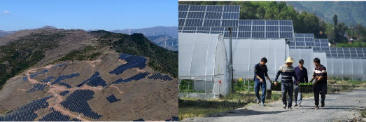

Climate change is a grim challenge facing all mankind. Human activities since the industrial revolution, especially carbon dioxide (CO2) emissions from large-scale fossil fuel consumption of developed countries, have led to a drastic increase in the concentration of greenhouse gases (GHGs) in the atmosphere. As a result, global climate change has been aggravated, posing a huge threat to global ecosystem security and socio-economic development of developing countries. Man and nature form a community of life. Addressing climate change is a common cause of the human race. It requires the international community to uphold multilateralism, pursue green and low-carbon development, and jointly build a community with a shared future for mankind.
China is a developing country with a population up to 1.4 billion. It is facing multiple challenges including economic development, people’s livelihood improvement, and environmental protection, coupled with the prominent contradiction of unbalanced and inadequate development. China is also among countries most severely affected by climate change. Climate change has exerted persistent impacts on China’s ecological environment and socio-economic development, and already brought serious threats to its food, water, ecology, energy, and urban operation security, as well as people’s safety and property.
China attaches high importance to addressing climate change. As President Xi Jinping reiterated, to address climate change is not at others’ request but on China’s own initiative. It is what China needs to do to achieve sustainable development at home, as well as to fulfill its due obligation to build a community with a shared future for mankind. China regards tackling climate change as an important starting point to push forward high-quality economic development, high-level environmental protection, and ecological civilization construction. It has incorporated climate change into the national economic and social development plans, put equal emphasis on mitigation and adaptation to climate change, and made every effort to advance all the work by legal, administrative, technical, market, and other means.
In recent years, China has stepped up efforts to promote low-carbon development by effectively mitigating GHG emissions, proactively enhancing climate resilience, and continuously improving systems and mechanisms. China has also played a constructive role in the finalizing of the Paris Agreement and its rapid entry into force, as well as in the negotiations on the rules for the full and thorough implementation of the Paris Agreement. Taking a driving seat in international cooperation to respond to climate change, China has become an important participant, contributor, and torchbearer in the global endeavor for ecological civilization.
Earth is our shared home, as clearly put by President Xi Jinping, we must never relax our efforts to tackle climate change. The human race needs a self-revolution to accelerate the formation of green development patterns and lifestyles, with a view to an ecological civilization and a beautiful Earth. China will implement a proactive national strategy on climate change, promote and lead the establishment of a fair and equitable, mutually beneficial global climate governance system, and advance the construction of a community with a shared future for mankind.
On September 22, 2020, President Xi Jinping declared, at the General Debate of the 75th Session of the United Nations General Assembly, that China would scale up its Nationally Determined Contributions (NDCs) by adopting more vigorous policies and measures, and aims to have CO2 emissions peak before 2030 and achieve carbon neutrality before 2060. On December 12, 2020, President Xi Jinping announced some further commitments for 2030 at the Climate Ambition Summit: China will lower its CO2 emissions per unit of gross domestic product (GDP) by over 65% from the 2005 level, increase the share of non-fossil fuels in primary energy consumption to around 25%, increase the forest stock volume by 6 billion m3 from the 2005 level, and bring its total installed capacity of wind and solar power to over 1.2 billion kW. On April 22, 2021, President Xi Jinping pointed out at the Leaders Summit on Climate that China has committed to move from carbon peak to carbon neutrality in a much shorter time span than what many developed countries might take, and that requires extraordinarily hard efforts from China. The targets of carbon peak and carbon neutrality have been added to China’s overall plan for ecological conservation. China is now making an action plan and is already taking strong nationwide actions toward carbon peak. Support is being given to peaking pioneers from localities, sectors and companies. China will strictly control coal-fired power generation projects, and strictly limit the increase in coal consumption over the 14th Five-Year Plan (FYP) period and phase it down in the 15th FYP period. Moreover, China has decided to accept the Kigali Amendment to the Montreal Protocol and tighten regulations over non-carbon dioxide emissions. China’s national carbon market will start trading. On September 21, 2021, at the General Debate of the 76th Session of the United Nations General Assembly, President Xi Jinping stated that China will strive to peak carbon dioxide emissions before 2030 and achieve carbon neutrality before 2060. This requires tremendous hard work, and China will make every effort to meet these goals. China will step up support for other developing countries in developing green and low-carbon energy, and will not build new coal-fired power projects abroad.
Guided by Xi Jinping Thought on Socialism with Chinese Characteristics for a New Era, China will thoroughly put into practice Xi Jinping Thought on Ecological Civilization, and on Diplomacy, and unswervingly pursue the new vision of innovative, coordinated, green, open and shared development. Adhering to a people-centered approach, China will move faster to cultivate green and low-carbon new drivers, establish a sound economic structure for green, low-carbon and circular development, accelerate the construction of a clean, low-carbon and efficient energy sector while ensuring energy security, and encourage simple, moderate, green and low-carbon ways of life. In addition, China will improve the system for tackling climate change, tighten the control on GHG emissions, enhance the capacity and level of adaptation to climate change, and deepen international cooperation on climate change, so as to promote the full and effective implementation of the United Nations Framework Convention on Climate Change (UNFCCC) and its Paris Agreement, and make greater efforts and contributions in the global response to climate change.
In accordance with paragraph 24 of Decision 1/CP.21 of the Conference of the Parties (COP) to the UNFCCC and the relevant requirements of the Paris Agreement, China hereby presents China’s Achievements, New Goals and Measures for Nationally Determined Contributions as an update of the Enhanced Actions on Climate Change: China’s Intended Nationally Determined Contributions submitted in 2015, which encompasses policies and measures adopted and results achieved by China with respect to NDCs, new goals and measures for enhanced actions on climate change, and active efforts in international cooperation on climate change.
The content herein related to climate change adaptation also forms China’s Adaptation Communication under the Paris Agreement.
As President Xi Jinping reiterated, to address climate change is not at others’ request but on China’s own initiative. It is what China needs to do to achieve sustainable development at home, as well as to fulfill its due obligation to build a community with a shared future for mankind. China will implement a proactive national strategy on climate change. In line with Xi Jinping Thought on Socialism with Chinese Characteristics for a New Era, China has integrated climate change as an important part of promoting high-quality development, stepping up development of an ecological civilization, and constructing a community with a shared future for mankind.
On April 22, 2021, President Xi Jinping systemically elaborated for the first time on the rich connotation and core meaning of the philosophy of “Man and nature form a community of life”, which could be highlighted as: we must be committed to harmony between man and Nature; we must be committed to green development; we must be committed to systemic governance; we must be committed to a people-centered approach; we must be committed to multilateralism; and we must be committed to the principle of common but differentiated responsibilities.
(I) China’s Philosophy on Climate Change
Proactively respond to climate change to promote high-quality economic development. China has entered a stage of high-quality development. High-quality development is a prerequisite for maintaining sustained and healthy economic development, and it is also essential to mitigating the principal contradiction of Chinese society and building a modern socialist country in all respects. China will base itself on a new stage of development, implement its new development philosophy in a full, accurate and comprehensive manner, build a new development pattern and promote high-quality development. Proactively tackling climate change and promoting green and low-carbon development are important means to boost high-quality development. This necessitates the establishment of a sound economic structure for green, low-carbon and circular development, a clean, low-carbon, safe and efficient energy system, and green and low-carbon ways of life. The structural adjustments in economy, industry, energy, transportation and consumption will inject a sustained impetus to high-quality development towards a win-win situation for economic development and addressing climate change.
Proactively respond to climate change to promote high-level environmental protection. Lucid waters and lush mountains are invaluable assets. China adheres to the path of ecological priority and green development, and endeavors to foster a new pattern of modernization featuring the harmony between man and nature, so as to realize high-level environmental protection. This is an inevitable requirement not only for overcoming resource and environmental constraints, but also for meeting the people’s growing needs for a better life. Tackling climate change is an important aspect of high-level environmental protection that has significant synergistic benefits with pollution control and ecological protection. It can improve environmental quality from the source while enriching the approaches, increasing the efficiency, and saving the costs of environmental governance.
Proactively respond to climate change to build a community with a shared future for mankind. As President Xi Jinping highlighted, the global efforts on addressing climate change can be taken as a mirror for us to reflect on what models to have for future global governance and how to build a community with a shared future for mankind. Much valuable inspiration may thus be drawn. In face of the challenge of climate change, no country can stay immune. China regards addressing climate change as an important aspect of building a community with a shared future for mankind. Upholding multilateralism as well as the principles of common but differentiated responsibilities, equity and respective capabilities, China promotes and leads the establishment of fair and equitable, mutually beneficial global climate governance system, and safeguards the concerted efforts to deal with global climate change, in a bid to protect the shared homeland for future generations.
(II) China’s New Goals for NDCs
In June 2015, the Chinese government submitted the Enhanced Actions on Climate Change: China’s Intended Nationally Determined Contributions. China determined its actions to achieve the peaking of CO2 emissions around 2030 and making best efforts to peak early; to lower CO2 emissions per unit of GDP by 60% to 65% from the 2005 level; to increase the share of non-fossil fuels in primary energy consumption to around 20%; to increase the forest stock volume by around 4.5 billion cubic meters on the 2005 level; and to take adaptation actions to enhance mechanisms and capacities for effectively defending against climate change risks. Moreover, China proposed 15 categories of policies and measures for enhanced actions on climate change. Since then, China has made significant progress in fulfilling its commitments in an active and pragmatic manner.
China’s updated NDC goals are as follows: aims to have CO2 emissions peak before 2030 and achieve carbon neutrality before 2060; to lower CO2 emissions per unit of GDP by over 65% from the 2005 level, to increase the share of non-fossil fuels in primary energy consumption to around 25%, to increase the forest stock volume by 6 billion cubic meters from the 2005 level, and to bring its total installed capacity of wind and solar power to over 1.2 billion kilowatts by 2030.
(III) Challenges Faced by China in Attaining the New Goals
China is confronted with enormous challenges and difficulties in its NDCs, which calls for great efforts. As a developing country with a population of 1.4 billion, China is facing arduous tasks such as economic development, people’s livelihood improvement, environmental governance, and addressing climate change. It is still and will long remain at the primary stage of socialism, where development is unbalanced and inadequate, and the quality and effect of development are not what they should be. China, a country rich in coal and poor in oil or gas, is currently in a critical period of transforming growth model, optimizing economic structure, and shifting growth drivers. With the continuation of industrialization and urbanization, energy demand will keep rising while it is unlikely to fundamentally change the coal-dominated energy mix in the short term. The updated NDC goals represent new major contributions to global climate governance and raise higher requirements for China’s work on addressing climate change.
At the same time, new problems and new challenges facing global climate governance have been on the increase in recent years. Unilateralism, protectionism, and anti-globalization have risen, which exerts adverse effects on global cooperation in climate change. Uncertainties in the NDC implementation are even higher for developing countries that see a more complex external environment.
Nevertheless, China’s determination to proactively tackle climate change will never waver. China remains unchanged in its commitments to address climate change, as well as its resolve to promote a fair and equitable, mutually beneficial global climate governance system. In the process of post-pandemic economic recovery, China will take the new NDC goals as an opportunity to advance economic transformation and upgrading for high-quality development, and keep on arduous efforts in pursuit of green and low-carbon development. Besides, China will work with the international community to establish a new philosophy of innovative, coordinated, green, open, and shared development, seize the historic opportunity of the new round of technological revolution and industrial transformation to promote the post-pandemic green recovery of the world economy, and thereby muster a strong force for sustainable development.
China has made positive progress in implementing its NDCs, through a series of measures such as adjusting industrial structure, optimizing energy mix, promoting energy saving and improving energy efficiency, using market mechanisms, and increasing carbon sinks. According to preliminary calculations, China’s carbon intensity(CO2 emission per unit of GDP)in 2019 was 51.9% of that in 2005 (as shown in Figure 1), a decrease of about 48.1% from 2005. It outperforms the 2020 goal of cutting CO2 emissions per unit of GDP by 40– 45% from the 2005 level, and represents a cumulative reduction of about 5.7 billion tons in CO2 emissions. This basically reverses the fast growth trend of CO2 emissions and makes a huge contribution to the global response to climate change.
Figure 1. Changes in China’s carbon intensity and its share of non-fossil fuels in primary energy consumption, 2015–2019
(Note: Data on carbon intensity are sourced from the National Center for Climate Change Strategy and International Cooperation or NCSC, and data on share of non-fossil fuels in primary energy consumption from the National Bureau of Statistics or NBS.)
In 2019, non-fossil fuels accounted for 15.3% of China’s energy consumption in 2019, a significant increase of 7.9% over 2005. According to the ninth National Forest Inventory (2014-2018), China’s forest coverage rate registered 22.96% and forest stock volume reached 17.56 billion m3, rendering the largest growth in green space among all countries.
In terms of adapting to climate change, the effective irrigation area of farmland in China expanded from 55 million hectares in 2005 to 68.3 million hectares in 2019, and the effective utilization coefficient of agricultural irrigation water increased from 0.45 to 0.56 in this period, which has enhanced climate resilience of agricultural production. Until June, 2020, more than 30 billion m3 of water resources have been supplied to northern China via the eastern route and the middle route in Phase I of the South-North Water Diversion Project, improving its capability of northern China area to cope with the adverse effects of climate change. For key areas such as coastal provinces, vulnerability assessment, sea-level change impact investigation, and coastal erosion monitoring and evaluation have been conducted, and coastal shelterbelts and wave-proof projects have been carried out to enhance the resilience of coastal zones and coastal ecosystems to climate disasters.2
(I) Continuous Improvement in Institutional System on Climate Change
1. Including climate change into economic and social development plans
The Outline of the 13th Five-Year Plan for the National Economic and Social Development of the People’s Republic of China unveiled in 2016 included "reducing energy consumption per unit of GDP by 15% and CO2 emissions per unit of GDP by 18%" as a binding target. The Outline of the People’s Republic of China 14th Five-Year Plan for National Economic and Social Development and Long-Range Objectives for 2035 issued in 2021 also set "reducing energy consumption per unit of GDP by 13.5% and CO2 emissions per unit of GDP by 18%" as a binding target. The two plans both dedicated a chapter to tasks for combating climate change. In 2016, the Comprehensive Work Plan for Energy Conservation and Emission Reduction during the during the 13th Five-Year Plan Period and the Work Plan for Controlling Greenhouse Gas Emissions during the 13th Five-Year Plan Period issued by the State Council defined the objectives, tasks, requirements, and sector-specific responsibilities for energy conservation, emission reduction and greenhouse gas emission control. Relevant plans were then prepared by key sectors of energy use and carbon emissions and provincial governments to set and implement targets and tasks on climate change. At present, in order to well execute tasks for CO2 emission peak and carbon neutrality, China is formulating and issuing relevant policy documents, including the Opinions on Full, Accurate and Comprehensive Implementation of New Development Philosophy to Well Execute Tasks for CO2 Emission Peak and Carbon Neutrality and the Action Plan for Carbon Dioxide Peaking before 2030, as well as carbon peak plans and supporting plans of key industries and sectors. With these, China is structuring a “1+N” policy system for CO2 emission peak and carbon neutrality, so as to provide strong support for achieving CO2 emission peak and carbon neutrality as scheduled.
2. Improving the systems and mechanisms on climate change
China has been placing great importance on addressing climate change. In recent years, the National Leading Group on Climate Change, Energy Conservation and Emissions Reduction was adjusted twice by the State Council to be headed by Premier Li Keqiang. Provincial leading groups have also been set up in provinces (autonomous regions and municipalities) as a comprehensive cross-sectoral coordinating body for local work on climate change, energy conservation and emission reduction. In May 2021, China established the Leading Group on Carbon Peak and Carbon Neutrality, with Vice Premier Han Zheng as the group leader and an office set within National Development and Reform Commission to further strengthen coordination, deployment and promotion of work on carbon peak and carbon neutrality.
Provinces (autonomous regions, municipalities) successively established leading groups on carbon peak and carbon neutrality to reinforce the coordination of work on CO2 emission peak and carbon neutrality. Meanwhile, supporting agencies represented by the National Expert Committee on Climate Change continued to play advisory roles.
Provincial carbon emissions control targets for the 13th FYP period have been set down by groups (see Table 1), taking into account factors such as development stage, resource endowment, strategic positioning and environmental protection. All provinces (autonomous regions and municipalities) have formulated plans, schemes, or opinions to implement the targets and tasks of controlling GHG emissions.
Table 1. Provincial carbon emissions control targets for the 13th FYP period
|
Provinces (autonomous regions, municipalities) |
Carbon intensity reduction target |
|
Beijing, Tianjin, Hebei, Shanghai, Jiangsu, Zhejiang, Shandong, Guangdong |
20.5% |
|
Fujian, Jiangxi, Henan, Hubei, Chongqing, Sichuan |
19.5% |
|
Shanxi, Liaoning, Jilin, Anhui, Hunan, Guizhou, Yunnan, Shaanxi |
18% |
|
Inner Mongolia, Heilongjiang, Guangxi, Gansu, Ningxia |
17% |
|
Hainan, Tibet, Qinghai, Xinjiang |
12% |
In order to meet the above-mentioned targets and tasks, the State has conducted assessments of provincial governments in fulfilling the responsibility for GHG emissions control, and used the results as an important basis for the comprehensive evaluation of the main persons in charge and the leading groups of each province (region, municipality), as well as for the reward, punishment, appointment, and dismissal of cadres. Most provincial governments have also carried out such assessments of lower-level administrative regions to strengthen local government responsibility for target realization and normalized working mechanism for pressure transmission.
4. Making progress in carbon emissions trading market
The carbon emissions trading pilots have been lunched in seven provinces and cities including Beijing, covering nearly 3,000 key emission entities in industries such as electric power, steel, and cement. As of December 31, 2019, a cumulative amount of approximately 368 million tons of CO2 emission allowances have been traded on spot in the seven pilot areas, involving about 8.128 billion yuan.
Pilot Carbon Market: Innovative Policy Instrument to Achieve Carbon Intensity Reduction Targets
Since 2011, China has launched the carbon emissions trading pilot in Beijing, Tianjin, Shanghai, Chongqing, Guangdong, Hubei, and Shenzhen, covering key emission industries such as electric power, steel and cement. A variety of allowance allocation methods have been adopted, such as the historical emissions method, the benchmark method, while innovative mechanisms have been explored, such as paid allocation, carbon finance, and inclusive carbon. These efforts have provided effective support for the achievement of carbon intensity reduction targets in the pilot areas and the whole country.
Overview of China’s carbon emissions trading pilots
|
Coverage |
Allowance allocation |
|
|
Beijing |
Electric power, thermal power, cement, petrochemicals, other industries, manufacturing and service, public transportation, etc. |
Free |
|
Tianjin |
Electric power, thermal power, steel, chemicals, petrochemicals, oil and gas, building materials, papermaking, aviation, etc. |
Free + Paid |
|
Shanghai |
Steel, petrochemical, chemicals, non-ferrous metals, electric power, building materials, textiles, papermaking, rubber, chemical fiber, aviation, ports, airports, railways, businesses, hotels, finance, automobiles, electronics, medicine, equipment manufacturing, etc. |
Free + Paid |
|
Hubei |
Electric power, thermal power, building materials, cement, ceramic manufacturing, textiles, automobile manufacturing, chemicals, equipment manufacturing, nonferrous metals, steel, food and beverage, petrochemicals, medicine, water production and supply, papermaking, etc. |
Free + Paid |
|
Guangdong |
Electric power, steel, petrochemicals, cement, aviation, papermaking |
Free + Paid |
|
Chongqing |
Electric power, chemicals, building materials, steel, nonferrous metals, papermaking |
Free |
|
Shenzhen |
Manufacturing, electric power, water, gas, public transportation, airports, docks, etc. |
Free + Paid |
Elements and characteristics:
Sector coverage: High-emission industries are basically covered, such as electric power, chemical industry, and steel. The coverage will be expanded on an explorative basis to regional characteristic industries such as papermaking and ceramics.
Allowance allocation: Paid allocation and free allocation are combined. Depending on the industries, different allocation methods are adopted, such as the historical emissions method and the benchmark method.
Market operation: The trading price is mainly maintained in the range of 20 to 70 yuan / ton.
Mechanism innovation: Innovative activities for carbon finance have been carried out, such as carbon bonds, carbon pledges, carbon futures, etc., to enrich the choices for market players. The inclusive carbon mechanism has been advanced on a pilot basis, which encourages the whole society to reduce emissions. Relying on the carbon market, the long-term ecological compensation mechanism has been explored.
Based on the pilot experience, steps have been taken to advance the construction of the national carbon emissions trading scheme by stages, with the power generation industry as a breakthrough point. Efforts have been made to promote the legislation on carbon emissions trading administration, research the national cap setting and allocation plan for carbon emission allowances, and improve the supporting management systems for GHG emissions reporting, verification, registration and settlement, as well as trading activities. Work has also been done in carbon emissions reporting and verification and emissions monitoring plan formulation, establishment of national carbon emissions registration system and trading system, and continuous carbon trading capacity building. In July 2021, China officially launched the national carbon emission trading market. The market took the year 2021 as the first compliance cycle, included 2162 key emission units of the power generation sector and covered approximately 4.5 billion tonnes of CO2 emission, being the largest carbon market worldwide.
The voluntary GHG emission reductions trading mechanism and its reform have proceeded in an orderly manner. As of December 31, 2019, nearly 400 voluntary emission reductions projects have been approved, of which about 90% are new energy and renewable energy projects. Transactions of voluntary emission reductions have shown a steady upward trend, with a cumulative trading volume of more than 200 million tons worth over 1.64 billion yuan.
(II) Significant Progress in the Control of GHG emissions
1. Groping for new low-carbon development models
Low-carbon pilots have been carried out in 10 provincial-level units and 77 cities to explore innovative models and systems for low-carbon development. The pilot regions have made extensive explorations to strengthen organizational leadership, perfect supporting policies, establish market mechanisms, improve statistical systems, strengthen evaluation and assessment, coordinate pilot demonstrations, and conduct cooperation and exchanges, which brings down their overall carbon intensity faster than the national average. Low-carbon development models tailored to local conditions and with local characteristics have taken shape. There are 8 low-carbon pilot cities (towns) and 51 low-carbon pilot industrial parks, as well as over 400 low-carbon pilot communities across 22 provinces (autonomous regions and municipalities). In addition, the National Metrology Technical Committee of Carbon Measurement has been established with approval; the technical specifications for metrology in carbon measurement have been formulated; and the national carbon measurement pilot has been kicked off.
2. Initially building a low-carbon energy system
Optimize the energy mix. The Energy Supply and Consumption Revolution Strategy (2016– 2030) released in 2016 set out the goal of "Four Reforms and One Cooperation"3 for the energy sector, that is, to actively build a clean, low-carbon, safe and efficient energy system.
Low carbon has become a new principle of energy development. The dual control over energy consumption quantity and intensity and the renewable energy quota system have been implemented and produced noticeable effects. In 2019, non-fossil fuels accounted for 15.3% of energy consumption, a sharp rise of 7.9 percentage points compared with 2005. During the same period, the share of coal fell from 72.4% to 57.7%, indicating significantly smaller reliance on coal and remarkable results in energy mix optimization. In 2019, non-fossil fuels contributed to 41.9% of the total installed power generation capacity, and outnumbered fossil fuels in incremental installed capacity for four years in a row. The installed power generation capacity of renewable energy amounted to 794 GW, of which wind, solar and biomass power supported 210 GW, 204 GW, and 23.69 GW respectively (see Figure 2). Photovoltaic poverty alleviation projects implemented in areas with abundant renewable energy resources but relatively backward economies have not only boosted the use of renewable energy, but also improved the living standards of local residents. From 2015 to 2019, China’s annual investments in renewable energy registered 480.1 billion yuan, 435.4 billion yuan, 522.5 billion yuan, 509.2 billion yuan, and 503.4 billion yuan (see Figure 3).
Promote energy saving and improve energy efficiency. China enforced the dual control of energy consumption quantity and intensity by advancing energy conservation across the board, including strengthening target constraint, policy guidance, and energy conservation management and system building, and deepening energy conservation in key areas. The dual control has yielded positive results. Support has been given to key energy-saving and low-carbon technologies to accelerate the advancement of energy-saving technologies. Energy users are encouraged to adopt advanced and applicable new technologies, equipment and processes for energy-saving purpose. Energy and resource measurement service demonstrations have been carried out to push for resource conservation and intensive utilization. Between 2016 and 2019, China’s energy use intensity dropped by 13.1%, with an average annual growth of 2.9% in energy use against an average annual economic growth of 6.6%, indicating that energy efficiency has increased substantially.
Sichuan: A New Model of Green Poverty Alleviation in “Photovoltaic Village”

Figure. Photovoltaic poverty alleviation of Liangshan Prefecture, Sichuan Province
Liangshan, Ganzi and Aba Prefectures in the western part of Sichuan Province are relatively underdeveloped regions in China, but they are rich in renewable energy resources such as solar power. In February 2018, when inspecting the hinterland of Daliangshan, General Secretary Xi Jinping required a solid advancement in poverty alleviation so that the people can live a good life. Through the implementation of photovoltaic poverty alleviation program, Sichuan Province organically integrates poverty alleviation and green transformation, and explores new paths for targeted poverty alleviation, improvement of human settlements, increase in farmers’ income, and new village construction. As of June 2020, totally 18 concentrated photovoltaic poverty alleviation projects with an installed capacity of 450 MW have been built, covering more than 20,000 poor households in 17 counties; and 70 grid-connected village-level power stations with an installed capacity of 31 MW have been built for photovoltaic poverty alleviation, benefiting 3,553 poor households in 20 counties. A cumulative income of 44.69 million yuan was realized from power generation, and a total of 6,187 public welfare jobs were created. By means of preferential feed-in prices, reasonable revenue distribution, and innovative business models for operation and maintenance, the photovoltaic poverty alleviation program has enabled poor households to increase income and become rich through employment transformation, thus achieving the win-win of poverty alleviation and ecological protection. (Image source: China News Service)
Figure 2. China’s installed capacity of non-fossil energy in 2015 and 2019
(Source: National Energy Administration / NEA)
Figure 3. China’s renewable energy investment, 2015–2019
(Source: NEA)
Phase out coal and coal power outdated production capacity, and push forward energy-saving and environmentally-friendly upgrades of coal power. The structural reform on the coal supply side has been actively advanced to resolve coal production overcapacity and boost the clean, efficient, and high-quality development of coal power. From 2016 to 2019, over 30 GW of thermal power capacity were eliminated. Energy-saving upgrade goals and tasks for coal power have been set out. As of 2019, the average use of standard coal consumption for power generation by thermal power plants has dropped to 306.4 g/kWh, a decline of 63.6 g/kWh compared with 2005, maintaining the world advanced level. In 2019, nationwide thermal power reduced 860 million tons of CO2 emissions compared with 2005 due to the reduction in coal consumption for power supply.
Qinghai: “Green Power for 15 Days”, A Chinese Example of Clean Energy Development
Qinghai Province, located in northwest China, has a total area of 722,300 km2 and a permanent resident population of 6.0323 million. It is one of the regions with the most abundant clean energy resources such as solar, hydro, and wind energy in China. In 2018, Qinghai formulated and implemented the Work Plan for Qinghai Province to Build a National Clean Energy Demonstration Province (2018-2020), which proposed to foster a national clean energy base with focus on large-scale new energy development; build a strong province of clean energy supporting industries underpinned by scientific and technological innovation; create a pioneer area of green energy use with an aim of 100% clean energy use. From June 9 to 23, 2019, the province relied entirely on renewable energy supply and used electricity from hydro, solar and wind power generation.
Installed capacity in 2019 (Total: 31.69 GW)
Electricity generated in 2019 (Total: 88.2 TWh)
Source: China Electricity Council / CEC
Figure 4. China’s coal consumption for power generation and CO2 emission reductions, 2005– 2019
(Source: CEC)
Beijing-Tianjin-Hebei Region: Control over Total Coal Consumption in Key Areas
The Beijing-Tianjin-Hebei region accounts for about one-tenth of both GDP and total energy consumption of the country. It has common demands for air quality improvement and energy mix optimization. In 2017, Beijing, Tianjin, and Hebei Province jointly formulated and issued the Action Plan for Coordinated Energy Development of Beijing-Tianjin-Hebei (2017–2020). It proposed that Beijing will basically realize the coal-free target in plain areas; Tianjin will basically eliminate bulk coal use for heat, except for the use of anthracite briquette in mountainous areas; and Hebei basically realize zero bulk coal use for heat in plain and rural areas. The coal consumption in Beijing-Tianjin-Hebei will be controlled at around 300 million tons. The three places have steadily promoted positive progress in related work.
Table. Coal use in the Beijing-Tianjin-Hebei region (10,000 tons)
|
Province |
2015 |
2018 |
Total decline rate (%) |
|
Beijing |
1165 |
276 |
76.3 |
|
Tianjin |
4539 |
3833 |
15.6 |
|
Hebei |
31701 |
29594 |
6.6 |
|
Total |
37405 |
33703 |
9.9 |
(Source: NBS)
3. Expanding system of green and low-carbon industries
Optimize industrial structure and vigorously develop low-carbon industries. Efforts have been made to build green and low-carbon industries into pillar industries, such as new energy vehicle (NEV), new energy, energy conservation and environmental protection, while vigorously promoting the rapid development of strategic emerging industries such as information technology and high-end equipment. In 2019, service industry accounted for 54.3% of China’s GDP, 3.5 percentage points higher than the 2015 level, and 15.7 percentage points more than that of the secondary industry. High-tech manufacturing and equipment manufacturing contributed to 14.4% and 32.5% of the added value of above-scale industries respectively, an increase of 2.6 and 0.7 percentage points from 2015 level. From 2016 onwards, China has imposed strict control over the expansion of high energy-consuming industries and phased out backward production capacity in accordance with laws and regulations to speed up overcapacity elimination. At the end of 2018, over 150 million tons of steel overcapacity was removed, exceeded the goal of the 13th FYP plan two years ahead of schedule. In 2019, China began to implement the Guiding Catalogue of Green Industries (2019 Edition) to direct policies and limited capital to industries that are most critical to promoting green development.
Promote low-carbon industrial development and effectively control emissions from key industries. The low-carbon benchmark and lead plan has been implemented, in which companies from key industries are encouraged to carry out carbon emission benchmarking activities. Management has been tightened for energy consumption and carbon emission targets in key industries such as electricity, steel, building materials, and chemicals, so as to drive green production and to promote green industry upgrades. Special energy-saving supervision for major national industries have been organized and implemented. During the 13th FYP period, supervision has been conducted at more than 23,000 high-energy-consuming enterprises, covering industries such as steel, cement, flat glass, and electrolytic aluminum, promoting their reasonable energy-use in compliance with laws and regulations. Industrial energy-saving diagnostic service actions have been carried out with more than 400 organizations providing the services to 14,000 industrial enterprises. Measures have been taken to accelerate the promotion and application of high-efficiency energy-saving equipment products, organize the implementation of energy efficiency improvement actions for general equipment such as motors and transformers, publish the National Recommended Catalog of Industrial Energy-saving Technology and Equipment and the Product Catalog of “Energy Efficiency Star” to recommend more than a thousand advanced energy-saving equipment and products to the society. According to preliminary calculations, CO2 emission per unit of industrial added value in 2019 was reduced by about 18% compared to 2015.
Guangdong: Develop Strategic Emerging Industries and Cultivate New Drivers of Green, Low-carbon, and Circular Development
The 13th Five-Year Plan for National Development of Strategic Emerging Industries set out the goal that the added value of strategic emerging industries will represent 15% of GDP by 2020. Guangdong Province has a relatively developed economy with advantageous industrial clusters, and therefore, it has set a higher goal of 16% for 2020. In 2018, the operating income of service industry above the designated size has increased by 14.0%, while the operating income of strategic emerging service industry increased by 19.6%.
Table. 2020 development goals for strategic emerging industries
|
New generation information technology industry (trillion yuan) |
High-end equipment and new materials industries (trillion yuan) |
Biological industry (trillion yuan) |
Green and low-carbon industries (trillion yuan) |
Digital and creative industries (trillion yuan) |
|
|
Nationwide |
12 |
12 |
8-10 |
10 |
8 |
|
Guangdong |
3 |
1 |
0.6 |
0.8 |
1 |
|
Percentage of Guangdong (%) |
25 |
8 |
6-8 |
8 |
13 |
Source: The 13th Five-Year Plan for National Development of Strategic Emerging Industries and the 13th Five-Year Plan for the Development of Strategic Emerging Industries in Guangdong Province.
Control GHG emissions from industrial processes and build a low-carbon industrial system. Measures have been taken to cut GHG emissions of industrial processes, including substituting raw materials, improving production processes, and optimizing equipment use. In addition to strict control over cement clinker production capacity, new dry process has been used in 95% clinker production, and low-temperature waste heat to power generation technology has been widely adopted. The short-process technology of electric furnace steelmaking–hot rolling is encouraged; the short-process technology for non-ferrous metal smelting is disseminated; and the production processes of calcium carbide and lime are improved to curtail CO2 emissions during the production process. The circular transformation of industrial parks has been intensified to increase the recycling and utilization of renewable resources, raise the rate of resource utilization and reduce CO2 emissions throughout the life cycle of resources. Pilot projects for the recycling of NEV power batteries have been implemented in the Beijing-Tianjin-Hebei region and other areas, speeding up the construction of a power battery recycling system, improving the comprehensive utilization of power batteries, and promoting GHG reductions in the production and use of power batteries. As of June 2020, cumulative HFC-23 emission reductions of 65,300 tons have been achieved with the support of fiscal funds, equivalent to 764 million tons of CO2 emissions.
Conch Group: Full Implementation of Pure Low-temperature Waste Heat Power Generation in Cement Production
The waste heat and residual pressure utilization project is one of the ten key energy-saving projects implemented in China. As of June 2020, Conch Group’s clinker production lines are all equipped with waste heat power generation systems. With a total installed capacity of 1,225 MW, the annual cumulative production of electricity hits about 8.6 billion kWh. Based on the same caliber of thermal power generation, it contributes to an annual reduction of 8.28 million tons of CO2 emissions.
Curb GHG emissions in the agricultural sector and improve the quality of agricultural production. Since 2015, China has accelerated the waste-to-resource utilization in livestock and poultry breeding, and begun to replace chemical fertilizers with organic fertilizers for smaller but more efficient use of chemical fertilizers and pesticides, in order to reduce agricultural GHG emissions and improve soil carbon sequestration, with a view to green and low-carbon agricultural development. As of 2019, the fertilizer utilization rate for three major food crops including rice, corn and wheat was 39.2%, and the pesticide utilization rate was 39.8%, increases of 4 and 3.2 percentage points respectively compared with 2015. Soil testing for formulated fertilization has been used in an area of 1.93 billion mu (about 128.67 million hectares), presenting a technical coverage rate of 89.3%. Green prevention and control technology has been applied to over 800 million mu of main crops (about 53.3 million hectares). As of 2019, the national comprehensive utilization rate of livestock and poultry manure stood at 75%; the installation rate of manure treatment facilities in large-scale farms climbed to 93%; and the annual comprehensive utilization rate of straw came to 86%.
Sichuan: Actively Develop Rural Biogas Projects
Sichuan, as a leading top livestock and poultry producer in China, is among provinces most suitable for rural biogas development. In recent years, Sichuan has taken rural biogas development as an important starting point to promote the transformation and upgrading of the livestock industry for green development and to respond to climate change in the agricultural sector. It encourages circular agricultural development that combines planting and breeding by pushing for livestock manure-to-resource utilization. Making active use of the voluntary GHG emission reductions trading mechanism, Sichuan has carried out 11 rural household biogas voluntary emission reduction projects, of which two have been registered with average annual emission reductions of 104,000 tons.
|
Table. Rural household biogas voluntary emission reduction projects in Sichuan Province |
|||||
|
Project progress |
Project quantity |
Average annual emission reductions (tons) |
Trading volume (tons) |
||
|
Certified emission reductions |
2 |
104035 |
3500 |
||
|
Registered projects |
9 |
459663 |
- |
||
4. Promoting GHG emissions control from urban-rural development and construction area
Optimize the territorial space development and protection pattern. Territorial space planning should be based on the evaluation of the carrying capacity of resources and the environment and the suitability of territorial space development. It necessitates scientific research and judgment for proactively coping with challenges brought by climate change. Territorial space protection and development for the new era has been planned in a holistic approach. Guidance and impetus has been given to new urbanization in various areas, in order to build energy-efficient and low-carbon cities. The rural revitalization strategy has been implemented, which leads rural revitalization with green development to promote intensive and efficient production space, livable and proper living space, and beautiful and unspoiled ecological space.
Build energy-efficient and low-carbon urban infrastructure. Efforts have been made to promote innovative planning concepts and improve planning methods in various regions, and to integrate such concepts as people orientation, respect for nature, historical inheritance, and green and low-carbon development into the entire urban planning process. Since 2015, a total of 58 pilot cities of ecological restoration and urban remediation have been identified to improve their sustainability and livability. In 2019, the green space rate and green coverage rate of urban built-up areas across the country registered 37.63% and 41.51% respectively, and the urban park and green space per capita reached 14.36 m2. Urban ecological and human settlements have been continuously improved.
Promote green buildings. Gradually improve the standard system, with revision on the national standard "green building evaluation standards" and innovatively reconstruction on green building evaluation standards system , which inspires 25 provinces and cities to issue local standards. More than 10 provinces and cities have issued green building design standards to promote green buildings in new buildings. Legislative work in the field of green buildings has been advanced in an orderly manner. Six provinces (regions), namely Hebei, Liaoning, Jiangsu, Zhejiang, Ningxia, and Inner Mongolia, have promulgated local green building regulations, while Jiangxi, Qinghai, and Shandong have issued government regulations on green buildings. More policy support has been given to green building development as some provinces and cities have introduced preferential fiscal and financial policies. Some carried out pilot projects to promote green finance in support of green building development. In 2015, the central government allocated 875 million yuan in subsidies to support energy-efficient building demonstrations through the renovation of rural dilapidated houses for 350,000 poor farmers in Northeast, Northwest, and North China, including walls, roofs, doors, windows, and other envelopes. As of the end of 2019, green buildings represented 65% of the newly constructed urban civil buildings; the cumulative area of urban green buildings exceeded 5 billion m2; and over 20,000 projects were rated green buildings.
Hebei: Leading the Energy Efficiency Design of Ultra-Low-Energy Passive Public Buildings
The Scientific Research Office Building of Hebei Building Technology Research Center is China’s first ultra-low-energy office building under Sino-German technical cooperation. It was completed and put into use in 2015. In accordance with the standard of a 50% reduction in energy use for public buildings implemented at that time, the annual energy savings in heating and cooling can reach 224 tons of standard coal, equivalent to CO2 emission reductions of about 587 tons. The project provides important technical support for Hebei’s compilation of Energy Efficiency Design Standards for Ultra-Low-Energy Passive Public Buildings. It has been labeled three stars under China’s green building rating system and certified by the German Energy Agency.
The LieChe New Town Project in Gaobeidian has a planned floor area of 1.2 million m2, including an ultra-low-energy area of 820,000 m2. In accordance with the standards of a 75% reduction in energy use for residential buildings and a 65% reduction for public buildings implemented at that time, the energy savings in winter heating are 2,456 tons of standard coal; the energy savings in summer cooling are 6.87 GWh, equivalent to 1,754 tons of standard coal. This contributes to annual CO2 and sulfur dioxide (SO2) emission reductions of 11,031 tons and 36 tons respectively.
Improve the energy efficiency of end-use energy products. Since 2015, steady steps have been taken to promote the energy efficiency standard system and energy efficiency labeling system for various household appliances, with the product coverage gradually expanding from household appliances to lighting appliances and commercial products, etc. Energy-efficient products have been promoted and applied through government procurement of energy-efficient products, project of energy-efficient product benefiting the people, and energy efficiency leader system, which greatly raises the overall energy efficiency of end-use energy products.
Speed up clean heating in cold areas of northern China. Provinces (autonomous regions and municipalities directly under the central government) in the northern heating regions have introduced targeted clean heating programs to improve the heating energy structure, increase the insulation level of the envelopes of new urban and rural buildings, and enhance the insulation effect of rural buildings. In the 2018 heating season, the overall energy use intensity of urban heating in the northern region dropped to 14.6 kg of standard coal / m2 from 17 kg of standard coal / m2 in 2015. By 2019, the clean heating rate in the northern region reached around 55% as 140 million tons of bulk coal (including coal for low-efficiency small boilers) was replaced.
5. Expediting the formation of low-carbon transportation system
Improve green transportation system and standards. System guarantees have been refined for energy conservation and environmental protection, GHG emissions control, and ecological progress in the transportation sector. The Green Transportation Standard System (2016) was released, which contains 221 standards covering energy conservation and carbon reduction, ecological protection, pollution control, resource recycling, testing and assessment, and supervision.
Foster urban low-carbon transportation system. As of 2019, urban rail transit lines with an operating mileage of 6,100 km have been open in 41 cities. Urban public transportation has steadily increased the mobility sharing rate while providing an increasing level of comfort. Urban slow traffic system has also developed rapidly. Online bicycle rental services have been available in more than 360 cities, with more than 300 million registered users. Vigorous efforts have been made to promote clean and low-carbon urban traffic. By the end of 2019, the number of new energy buses in the country has exceeded 400,000. All buses in Shenzhen and taxis in Taiyuan have adopted pure electric vehicles.
Optimize the transportation structure. Adjustment of the transportation structure by reducing road transportation and increasing rail and water transportation is an important measure for China to achieve low-carbon development of the transportation. Focusing on road-to-rail and road-to-water bulk cargo transportation, the comprehensive transportation network has been continuously improved, and transportation organization has been effectively enhanced, which brings down the volume of road transportation. In 2016–2019, rail freight volume increased at an average annual rate of 10.2%, rising from 3.332 billion tons to 4.389 billion tons, while the average annual growth rate of road freight volume was 8.1% over the same period.
Shenzhen: China’s First City of Pure Electric Buses
As of the end of 2019, there were 16,432 pure electric buses in Shenzhen. Realizing pure electrification of buses, Shenzhen is among cities with the largest and widest use of pure electric buses. Compared with traditional diesel buses, pure electric buses in Shenzhen save energy by 72.9%. Their annual energy savings total about 366,000 tons of standard coal, equivalent to 345,000 tons of fuels.
With the rapid promotion of full electrification, the fuel consumption of public transportation in Shenzhen is curtailed by more than 95%, reducing its dependence on fossil fuels. This also optimizes the energy structure of public transportation and significantly improves the air quality and acoustic environment.
Accelerate the replacement and optimization of transportation fuels. Emissions standards and oil standards for vehicles have been updated in a faster manner. The Limits and Measurement Methods for Emissions from Light-duty Vehicles (Phase VI) and the Limits and Measurement Methods for Emissions from Heavy-duty Diesel Vehicles (Phase VI) have been released in succession since 2016. The civil aviation sector has accelerated the construction of replacement facilities for auxiliary power units, as well as the NEV application. As of 2019, airports nationwide have been equipped with 2,200 sets of 400 Hz power systems and about 2,700 electric vehicles, and realized photovoltaic power generation of more than 20 GWh. The water transportation sector has actively encouraged the use of shore power for ships calling at ports. As of the end of 2019, more than 7000 berths have been covered by shore power facilities across the country, and over 290 LNG-powered ships and over 20 LNG filling stations have been built. Besides, green transportation pilots have been carried out, including 4 provinces, 27 cities, 11 ports, and 20 roads. They have generated energy savings of about 630,000 tons of standard coal, equivalent to about 2.13 million tons of standard oil.
Shared Transportation Boosts Low-carbon Travel
In recent years, shared transportation has facilitated the travel of residents and reduced carbon emissions of urban transportation owning to its smart, convenient and green characteristics. More and more people in China choose green shared transportation. Using the methodologies for emission reductions of car-hailing services recommended by the Committee of Experts on Emission Reduction Methodologies for Clean Development Mechanism under the Kyoto Protocol, the 2018–2019 data indicate that a single shared transportation platform can generate more than 100 million tons of CO2 emission reductions. At the same time, shared transportation has produced important social benefits by bringing flexible work and income opportunities to car owners and drivers. It is conservatively estimated that 10 billion passenger-times are transported in this model each year.
Encourage NEV development. NEV industry development has been boosted with issuing the parallel management measures for average fuel consumption and new energy vehicle points of passenger vehicle enterprises and establishing a mechanism that traditional fuel vehicle manufacturers repay NEV manufacturers. The NEV industry has entered the growth period from the introduction period, ranking first in the world in both production and sales. In 2019, there were 3.81 million NEVs in China, an increase of 46.05% over the previous year. Besides, guidance has been provided to help the automotive industry improve energy-saving technology.
Figure 5. China’s NEV ownership, 2015–2018
6. Energy conservation and efficiency improvement led by public institutions
Totally 1.67 million public institutions such as party and government agencies, hospitals, schools, and venues have taken the lead in energy conservation and emissions reduction. Green life activities have been vigorously carried out, such as conservation-oriented agencies, green travel, green buildings, and green schools. Conservation-oriented models have been created and energy efficiency leaders selected to give further play to the demonstration and leading role of public institutions. A raft of energy efficiency standards for public institutions have been introduced to promote energy use quota management. A relatively complete management system has gradually formed, covering organization and management, technology promotion, accounting and monitoring, supervision and evaluation. They offer energy conservation and emissions reduction solutions for public institutions in the whole society. In 2019, the comprehensive energy use per capita of public institutions nationwide was 333.81 kg of standard coal; the energy use per unit of floor area was 18.89 kg of standard coal; and the water use per capita was 22.29 tons, down by 10.0%, 8.1%, and 12.1% respectively compared with 2015.
Step up the cultivation of forest and grass resources to effectively increase carbon sinks. The comparison of the results of the Eighth (2009–2013) and Ninth (2014–2018) National Forest Resources Inventories indicates that China’s forest stock volume increased by 2.423 billion m3 and forest coverage rate increased from 21.63% to 22.96%. Between 2016 and 2019, trees have been planted in a cumulative area of 444 million mu (about 29.6 million hectares). Projects for national forest tending and forest quality precision improvement have been implemented; and forest management model bases and sustainable management pilots have been launched. From 2016 to 2019, forest quality was steadily improved as forest tending was completed in an area of 518 million mu (about 34.53 million hectares). Efforts have also been intensified in the development of reserve forests and forestry biomass energy. As of 2018, a total of 42.154 million mu (2.81026 million hectares) of reserve forests have been built nationwide.
Saihanba: China’s Green Miracle
Figure. Before and after the implementation of Saihanba Afforestation Project
1n 1962, the first group of afforestation teams entered Saihanba, unveiling the legend of afforestation through three generations. Saihanba has been altered from inaccessible wasteland to a "natural oxygen bar" with a forest coverage rate of 80%, as well as 1.12 million mu (about 74,667 hectares) of woodland and 200,000 mu (about 13,333 hectare) of meadow. Forest ecosystems in Saihanba contribute to water conservation, water purification (137 million m3), carbon sequestration (747,000 tons), and oxygen release (545,000 tons) every year. President Xi Jinping stated that we must adhere to the concept of green development, carry forward the spirit of Saihanba, and persevere in advancing the construction of ecological civilization. Through work from generation to generation, we will strive to form a new pattern of harmonious development between man and nature, and create a more beautiful environment with blue skies, lush mountains, and lucid waters for future generations. (Image source: China News Service)
Strengthen all-round resource protection and strive to reduce carbon emissions. In 2016, an end was put to commercial harvesting in natural forests across the board, basically meeting the goal of "trying to take all natural forests under protection". As of the end of 2019, the national area of natural forests expanded to 140 million hectares and the stock volume increased to 14.108 billion m3. The National Forest Fire Prevention Plan (2016–2025) was issued and implemented to strengthen forest disaster prevention and control. From 2016 to 2019, there was a continuous sharp decline in the average annual number of forest fires and the affected area and associated casualties. Compared with the 12th FYP period, the annual average number of forest fires was reduced by 36%, and the disaster rate of major forestry pests was limited to below 0.45%.
(III) Proactive Adaptation to Climate Change4
1. Issuing and implementing the National Strategy on Climate Change Adaptation
China has issued the National Strategy on Climate Change Adaptation. The strategy laid out clear guiding thoughts and principles for climate change adaptation from 2014 to 2020, as a guidance for various policies and institutional arrangements; set out specific adaptation goals such as significant enhancement of adaptation capacity, full implementation of key tasks, and basic formation of regional framework for adaptation; identified key tasks in seven areas, including infrastructure, agriculture, water resources, coastal regions and coastal waters, forests and other ecosystems, human health, tourism and other industries; proposed adaptation tasks with respective emphasis for urbanized areas, agricultural development areas, and ecological security areas. Pursuant to this strategy, departments concerned and local provinces and cities have carried out a considerable amount of comprehensive and systematic work, adjusted and improved relevant policies and institutional arrangements, and proactively implemented policies and actions on climate change adaptation, which yields positive results.
2. Taking actions on climate change adaptation in key areas
Cities. In 2016, China formulated an action plan for climate change adaptation in cities. In 2017, the climate-resilient city pilot was launched in 28 cities. In each pilot area, a leading group for building climate-resilient cities was established, and a plan for urban adaptation to climate change was prepared. Adaptation actions that seek advantages and avoid disadvantages have been explored and implemented, including taking into account climate change in urban planning; improving urban monitoring, early warning and emergency response capabilities; carrying out adaptation actions in key areas such as infrastructure, water resources, natural ecosystems, and public health; exploring innovative systems and mechanisms for climate change adaptation, and strengthening international exchanges and cooperation in climate change adaptation. These efforts have produced positive results.
Lishui: Building a Disaster Prevention, Mitigation and Relief System for the New Era
Lishui in Zhejiang Province is a typical mountainous city where mountains accounts for 90% of the area and waters and croplands 5% each. It is prone to regional meteorological disasters such as typhoons, rainstorms, and floods. Lishui has set up the Municipal Emergency Management Headquarters and City Management Command Center to assist the Municipal Emergency Management Bureau in undertaking the city brain construction plan, promoting the digital transformation of disaster prevention and relief and emergency management, and establishing a unified emergency response command platform that covers geological disasters, floods and droughts. In 2020, Lishui issued China’s first local standard for natural disaster emergency command system, and formulated the layout plan for disaster avoidance and resettlement sites, and achieved the full coverage of natural disasters in public liability insurance. The city has also actively provided ecological meteorological services, strengthened climate disaster early warning and prediction capabilities, and initially fostered an ecological meteorological observation data collection network that integrates environmental protection, forestry, tourism, and electric power.
Coastal erosion areas. The China Sea Level Bulletin and the China Marine Disaster Bulletin are published every year. Seawall heightening and reinforcement projects have been implemented. Protection standards for coastal cities and major engineering facilities have been raised, while strategies for protecting coastal areas against sea level rise have been strengthened. Since 2016, the Blue Bay Remediation Action has been carried out in coastal cities, improving marine ecological functions. In 2017, warning tide levels in 11 coastal provinces were re-verified, and the technical methodology for risk assessment and zoning was developed for five risks, i.e. storm surges, tsunamis, sea ice, ocean waves, and sea level rise, which improve the level of scientific protection of coastal areas against marine disasters. In 2020, China completed the First Scientific Assessment Report on the Ocean and Climate Change, which assessed the changes in China’s marine environment and the basic situation of sea level, and predicted the future trends of ocean and climate change.
Qinghai-Tibet Plateau. Observation stations for plateau glaciers and frozen soils have been created, which also conducts the monitoring and forecasting of dam-burst floods in ice lakes. The system of nature reserves such as the Sanjiangyuan National Park has been strengthened to comprehensively protect the ecosystems of mountains, waters, forests, farmlands, lakes, grasslands, sands and ice. Grassland protection and development projects such as returning pasture to grassland have been implemented, effectively alleviating the degradation of alpine grassland. Integrated demonstration of ecological restoration technology system has been carried out, including ecological re-sowing and photovoltaic sprinkling of degraded grassland for adapting to climate change. As it is effective to mitigate the adverse effects of seasonal droughts, the practice was cited as a successful case of climate change adaptation, ecological restoration of alpine grasslands, and ecological function improvement in the Fifth Assessment Report of the Intergovernmental Panel on Climate Change (IPCC). To cope with the impacts of climate change on the Qinghai-Tibet Railway and other major projects, ground temperature monitoring was added along the Qinghai-Tibet Railway. Based on estimated future annual and seasonal warming characteristics of the Qinghai-Tibet Plateau and along the Qinghai-Tibet Railway, a variety of structural adaptation measures have been adopted to reduce the degradation of frozen soil and ensure the stability of frozen soil roadbed.
Other key ecological areas. Highlighting vulnerability, sensitivity and main ecological functions, work has been planned for climate adaptation and ecological restoration in ecologically vulnerable areas, such as northwest agro-pastoral transition zone, southwest rocky desertification area, Yangtze River Basin, Yellow River Basin, and other major river and lake basins. Key areas with differences and their ecological vulnerabilities have been actively identified, taking into account the relative integrity of administrative regions and the relative consistency of climate change characteristics. Differentiated measures for ecological protection, management and restoration have been taken, such as comprehensive soil erosion management, vegetation restoration, land use adjustment, and natural forest protection plan, in order to optimize the adaptive allocation of water and soil resources, improve environmental carrying capacity, enhance ecosystem stability in ecologically vulnerable areas, and improve climate resilience in a coordinated manner.
3. Advancing actions on climate change adaptation in key fields
Agriculture. Great efforts have been made to promote research on agro-meteorological disaster prevention technologies and advance measures such as agricultural climate zoning and agricultural irrigation. More than 60 new technologies for agro-meteorological adaptation have been developed and promoted, such as disaster prevention and mitigation and production increase, and climate resource utilization. Through national key research and development plans, adaptation strategies for stable production have been explored, including sowing date adjustment, population optimization, and water and nitrogen migration. Crop varieties which are resistant to heat, drought, low light and low temperature are selected. Totally 3,564 agricultural climate zones at provincial, city and county levels and 5,303 agro-meteorological disaster risk zones have been delineated, which lays an important foundation for optimizing the agricultural structure and reducing losses from agricultural disasters. Effective irrigation area was enlarged from 55 million hectares in 2005 to 68.3 million hectares in 2019.
Forestry and grassland. The Action Plan for Adaptation to Climate Change in the Forestry Sector (2016–2020) required more efforts in monitoring and early warning, risk management, and team building to comprehensively improve climate resilience of the forestry sector. A wildlife refuge system with national parks as the mainstay has been established. The protection and management of national public welfare forests, natural forests, and other types of forests has been strengthened, by strictly implementing forest land conservation and utilization plans at national, provincial and county levels and upgrading forest land quota management. The central government has arranged forestry funds to support the protection of natural forest resources, new-round return of farmland to forest and grassland, cultivation of forest resources, and compensations and subsidies for ecological benefits of forested wetland. In view of climate characteristics and grassland degradation in different regions, major grassland protection and restoration projects have been initiated, such as returning pasture to grassland, Beijing-Tianjin sandstorm source control, and artificial grass planting on degraded grassland, in an effort to speed up the restoration of degraded grassland vegetation and improve ecological functions and productivity of grassland. In severely overloaded and overgrazed areas, grazing ban through enclosure has been tightened, and combined with measures such as grass seed replanting, soil loosening and fertilizing, and rodent and pest control, to facilitate grassland recovery and vegetation restoration. Grassland that has been cultivated is returned to farmland in a planned way. The systems for grassland management and protection, grazing ban and suspension, and grass-livestock balance have been implemented to reduce the grazing pressure on natural grassland. In 2019, the national grassland comprehensive vegetation coverage reached 56%; the total fresh-grass output of natural grasslands surpassed 1.1 billion tons; and the average livestock overload rate of key natural grasslands fell to 10.1%. The ecological functions of grassland, such as wind prevention and sand fixation, soil and water conservation, carbon fixation and oxygen release, and climate regulation, have been restored and strengthened, and the ecological environment in some grassland areas has been significantly improved.
Water resources. The flood prevention and disaster reduction system has been perfected to enhance capability to guard against and cope with floods. Efforts have been made to speed up major river backbone projects, while accelerating the work to make up for weak links in flood control of small and medium-sized rivers. The responsibility system for flood control and drought relief has been improved, of which the core is that the administrative chief assumes full responsibility. A flood control and disaster mitigation system that combines structural measures such as reservoirs, dikes and flood storage and detention areas with non-structural measures has been basically formed. In a stronger move to build a water-saving society, the most stringent water resource management system has been put into effect, which contains three red lines for water use, water efficiency, and water pollution in water functional zones. Water resource storage and allocation projects have been implemented in river basins or regions. Regarding the construction of national water-saving cities, a total of 96 cities across the country have been recognized, whose annual water savings are about 5 billion m3, equivalent to 10% of their annual water supply. Aquatic ecological protection and rural hydropower green development have made progress. River chief and lake chief systems have been fully implemented, and special action has been carried out to clear four behaviors (arbitrary occupation, mining, heap and construction), so that the national water environment and ecology and waterfront management and protection have been significantly improved. In 2015, 30 pilot sponge cities were created, and to date, about 33,000 sponge city projects have been completed nationwide.
Public health. The impacts of climate change on public health have been assessed, which takes into account the demand of traditional climate services and various industries including health for responding to climate change. The National Health Commission and departments concerned have compiled technical guidelines related to climate change and public health, such as guidelines for health protection in air pollution and environmental health emergencies in natural disasters, and 12 health and epidemic prevention guidelines and programs, including the investigation and control of infectious diseases in flood-stricken areas. They have also organized a series of research projects related to health risk assessment and adaptation to climate change, and formulated technical guidelines for health risk assessment of climate change.
Infrastructure. Vigorous urban renewal projects have been launched, such as the transformation of old and dilapidated urban communities. Urban construction methods have been further changed by incorporating the transformation and upgrade of water supply, drainage and other pipe networks into urban renewal, and improving the green space of housing and surrounding areas. Prefabricated buildings have been promoted. In 2019, nationwide 420 million m2 of prefabricated buildings were newly constructed, accounting for 13.4% of the newly added floor area. Urban greenways have effectively alleviated the urban heat island effect and related climate risks. As of 2018, a total of 56,000 km of greenways have been built across the country. On the basis of analyzing the impacts and requirements of climate change on highway infrastructure construction, targeted measures are integrated in the design and construction process to improve project safety and durability. While strengthening the maintenance of transportation facilities, design and construction standards are continuously raised for roads, railways, airports, pipelines, urban rails, water buses, etc. With faster-pace transformation of old and dilapidated roads, improvement has been achieved in the resilience of national highway network to extreme weather such as low temperature, snow, floods, and typhoons.
4. Improving monitoring, early warning, and disaster prevention and mitigation capabilities
The National Comprehensive Disaster Prevention and Mitigation Plan (2016–2020) was released to guide the work of disaster prevention, mitigation and relief in the context of climate change and strengthen the capacity building of climate disaster prevention and mitigation services. A comprehensive assessment model for climate change has been developed; a disaster information management system has been completed; and a nationwide long-time-series disaster database has been established, covering a variety of meteorological disasters such as regional droughts, heavy rain, heat, sand and dust, typhoons, snows, low temperature and freezing injury. Since 2014, a total of over 19 billion yuan in the central government budget has been used to advance projects of meteorological satellites, radars, meteorological guarantees for mountain torrents and geological disasters, and marine meteorology. The layout of observation station network has been optimized, contributing to greater capability of monitoring and forecasting meteorological disasters and extreme weather and climate events. Emergency warning system functions have been improved and information dissemination channels broaden, thereby raising the public awareness of risk prevention. An air-ground-space integrated disaster monitoring system covering the whole country has been put in place, and the China Climate Change Monitoring Bulletin is issued every year. Urban areas have explored the establishment of inter-departmental early-warning information release centers, multi-hazard early warning systems, and risk management business systems. Rural areas have gradually accelerated the construction of meteorological disaster monitoring, early warning and emergency response systems.
(IV) Initial Results Achieved in Supporting and Safeguard Systems
1. Gradual establishment of GHG emissions statistical accounting system
Improve the basic statistical system for GHG emissions. A statistical indicator system for response to climate change has been built, containing 36 indicators in 5 categories on climate change and its impacts. The division of responsibility for basic statistics on GHG emissions has been defined. By incorporating basic statistics on GHG emissions into the government statistical indicator system and departmental statistical reports, a basic statistical system that matches the GHG emissions inventories has been established and improved. In addition, the leading group on climate change statistics consisting of 23 departments has been set up, and the working mechanism with comprehensive government statistics as the core has been created for the division of labor and coordination among relevant departments. In 2017, the reduction rate of CO2 emissions per unit of GDP was included for the first time into the Statistical Bulletin of the People’s Republic of China on National Economic and Social Development. In 2021, the Office of the Leading Group on Carbon Peak and Carbon Neutrality set up a working group on carbon emissions statistical accounting to accelerate the improvement of carbon emission statistical accounting system.
Shanghai: Establishing a Sound Statistical Survey System on Climate Change
In accordance with the Opinions on Strengthening the Statistical Work Related to Combating Climate Change, Shanghai has formally implemented the Shanghai Statistical Report System on Climate Change since 2013, which was renamed Shanghai Comprehensive Statistical Report System on Climate Change and Green Development in 2018. It reports to NBS and gets the official reply every year. In order to effectively implement the above-mentioned system, special personnel have been employed in Shanghai Municipal Bureau of Statistics to be responsible for the collection and evaluation of statistical indicators on climate change, as well as basic statistics on GHG emissions, and related funds have been arranged to provide a guarantee for normalizing the working mechanism.
Departments involved: 11 departments including Shanghai Municipal Bureau of Statistics and Bureau of Ecology and Environment.
Reports contained: 38 forms such as Fact Sheet on Tackling Climate Change and Green Development.
Indicators included: 111 indicators including GHG emission statistics, accounting and assessment, climate change adaptation research and other capacity building investment.
Gradually normalize the compilation of national GHG inventories. In 2017, China submitted the first Biennial Update Report, including the 2012 national GHG inventory. In 2019, China submitted the third National Communication and the second Biennial Update Report, including 2010 and 2014 national GHG inventories respectively. In accordance with the relevant requirements of the Paris Agreement, a mode of submitting the national GHG inventory every two years has been gradually formed.
Gradually standardize the compilation of local GHG inventories. In accordance with the unified national requirements, all provinces (autonomous regions and municipalities) compiled provincial GHG emission inventories for 2012 and 2014, and conducted cross-assessment in 2018. Beijing and some regions have also prepared their provincial level of GHG inventories for other years, and Zhejiang has made unified plans for prefecture-level GHG inventory compilation. In some areas, data management platforms have been set up to support the compilation of GHG emission inventories and carbon emission data analysis and assist the government in low-carbon supervision and scientific decision-making.
Zhenjiang: Urban Carbon Emissions Accounting and Management Platform
Zhenjiang City of Jiangsu Province is among the second group of low-carbon pilot cities in China. Zhenjiang Low-Carbon City Construction Management Cloud Platform is an independently developed intelligent low-carbon management platform, which represents the leading exploration and innovation in terms of digitalization, networking and spatial visualization of low-carbon city construction. The platform uses cloud computing, Internet of Things, business intelligence, geographic information system, and other information technology to realize the spatial visualization of urban GHG emissions and the informatization of inventory compilation.
2. Increasing funding and policy support
Increase greatly government financial support. The central government budget has scaled up investments in climate change mitigation and adaptation and technological support. In the energy sector, additional subsidies for tax have been provided to encourage renewable power generation. In the transportation sector, support has been given to the adjustment of transportation structure, emission reduction of planes and ships, development of drop and pulls transportation, and promotion of NEVs. In the building sector, low-income farmers have been subsidized to carry out energy-saving renovation of houses. In the forestry sector, support is focused on the construction of key shelterbelt systems, preservation of natural forests, and protection of grassland ecosystems. In the agricultural sector, financial support covers the waste-to-resource of livestock and poultry manure, comprehensive utilization of straw, and replacement of chemical fertilizer with organic fertilizer. In terms of science and technology, special funds have been arranged to support basic research and climate change mitigation and adaptation.
CCDMF Supports Activities on Climate Change
The China Clean Development Mechanism Fund (CCDMF), established in 2007, is committed to national climate change mitigation and adaptation. It serves as a seed fund to provide grants and organize corresponding investment and financing activities for projects with significant benefits in climate change mitigation. The grants of the fund are mainly used to assist countries and institutions in capacity building on climate change, carbon market construction, low-carbon publicity, training and other activities, and to comprehensively support national strategies on climate change. The paid use of the fund supports, by means of equity investment, entrusted loans, and financing guarantees, industrial activities that are conducive to tackling climate change, such as the Caoqiao Combined-Cycle Thermal Power Plant Cogeneration Project in Beijing, and Binhai New Area Waste Incineration Project in Tianjin.
Use tax policies to support green and low-carbon development. In 2016, new energy & energy conservation and resources & environment were included in the High and New Tech Fields under the Key Support of the State. Accredited companies can enjoy tax revenue concessions according to the provisions. In January 2015, the tax rate for gasoline and diesel consumption tax was raised in a move to guide reasonable consumer demand and promote energy conservation. From September 2014 to the end of 2022, NEVs are exempted from vehicle purchase tax, and this policy was maintained in 2018. For small displacement vehicles, the vehicle purchase tax was reduced from October 2015 to the end of 2017. In July 2016, the reform of ad valorem resource tax calculation started across the board, and an automatic tax adjustment mechanism was established. Since 2012, policies have been implemented to exempt new energy vehicles and vessels from vehicle and vessel tax and halve the tax on energy-efficient vehicles and vessels. In 2018, the certification standards for energy-efficient vehicles and NEVs were updated and adjusted.
Strengthen innovation in climate investment and financing policies. Comprehensive supporting policies for climate investment and financing have been introduced, forming a support system comprised of environmental economic policies, financial policies, macroeconomic policies, and sector-specific industrial policies. The system of climate investment and financing standards has been built in a coordinated manner, and the market mechanism to guide funding strengthened. Local efforts in differentiated models and tool innovations are supported, while climate investment and financing pilots are quickened. The market mechanism has been refined and market financing tools developed for carbon emissions trading, and the Interim Provisions on Accounting of Carbon Emission Trading was issued. Besides, a climate investment and financing support institution was established. The Climate Investment and Finance Association was created under the Chinese Society of Environmental Sciences to serve green and low-carbon development with a view to a climate-resilient society.
Vigorously develop green finance. Great effort has been devoted to green credit. In addition to improvement in supporting facilities for green bonds, the Guiding Catalogue of Green Industries was published to effectively guide the flow of social capital to economic activities for tackling climate change. Green finance performance evaluations have been carried out among depository financial institutions, as a part of the efforts to inspire and encourage financial institutions to provide green financial services. At the end of the third quarter of 2020, the national balance of green loans registered 11.55 trillion yuan, an increase of 16.3% over the beginning of the year and an annual growth rate of 22.4%. Among them, the balance of green loans to entities was 11.51 trillion yuan, accounting for 10.5% of the outstanding loans to enterprises and public institutions during the same period. Support has been given to the issuance of green bonds by financial institutions. At the end of the third quarter of 2020, the inter-bank market issued a total of 608 billion yuan of green financial bonds, with a year-on-year growth of 2.6%. Financial institutions are also encouraged to offer innovative green financial products and services, from 2016 to the end of September 2020, 70 securities companies perform as the lead bearers or managers of green assets, total value of 268.192 billion yuan of green bond products (including asset securitization products) was traded. Encourage innovation on green mortgage and guarantee methods and a variety of green credit businesses development. For example, the Export-Import Bank of China has established a green credit product system that encompasses energy conservation and environmental protection loans, transformation and upgrading loans, and traditional superior credit varieties, providing an important reference for banks to participate in the construction of green credit mechanism. Through full mobilization, China’s social capital has become an important guarantee for and source of financial support to address climate change.
3. Growing technological support
Scale up research & development investment. Issued in 2017, the 13th Five-Year Plan for Science and Technology Innovation to Address Climate Change laid down a comprehensive plan on science and technology to cope with climate change. Key national research and development programs have become the main channel for science and technology investment in this respect. In 2016–2018, both 11 key projects, including “Global Change and the Response”, “Clean and Efficient Use of Coal and New Energy-saving Technology”, and 2 major projects, i.e. “Development of Large Oil and Gas Fields and Coal-Bed Methane” and “Large-scale Advanced Pressurized Water Reactor Nuclear Power Plants”, contained technology research & development on climate change. They have received a funding of 12.756 billion yuan in total from the central government. Since 2018, the Chinese Academy of Sciences has deployed strategic technology pioneer projects, such as transformational and key clean energy technologies and demonstrations; scientific project on Earth big data; pan-tertiary environmental changes and the Green Silk Road construction; and science and technology project on a beautiful Chinese and ecological civilization, for which about 1.2 billion yuan was financed from 2018 to 2019.
Strengthen the guidance of technological innovation and build a market-oriented green technological innovation system. In 2019, China issued the Guiding Opinions on Building a Market-Oriented Green Technology Innovation System, aiming to basically establish a market-oriented green technology innovation system by 2022. To this end, the opinions proposed to strengthen the principal position of businesses, improve the guidance mechanism, and build some demonstration zones for green technology innovation, to cultivate a group of national engineering research centers and national technology innovation centers, and to optimize the rule-of-law, policy, and financing environment for green technology innovation.
Facilitate the promotion and utilization of green and low-carbon technologies. China released the Guiding List of the Deployment of Energy Conservation and Emission Reduction Technologies and Low-Carbon Technologies (Second Group) in 2016 and the National Promotion Catalogue of Key Energy-saving and Low-Carbon Technologies the next year to accelerate the transformation, application, and promotion of low-carbon technologies with good demonstration effect and high mitigation potential, encourage enterprises to adopt advanced and applicable energy-saving and low-carbon new processes and new technologies. They have provided an important reference for promoting low-carbon upgrading and transformation of related industries. Under the framework of the International Partnership of Energy Efficiency Cooperation (IPEEC), China has taken the lead in establishing a working group on "Best Energy-efficient Technologies and Best Energy-efficient Practices" ("Top Tens"), and in 2019 released the second batch of domestic "Top Tens" lists to promote energy efficiency and energy transition. In 2020, China issued the Green Technology Promotion Catalogue (2020) to support the promotion of technologies regarding energy-saving and environmental protection, clean production, clean energy, ecological environment and green infrastructure.
Consolidate the foundation of adaptation research and technological development. In response to industry and local needs, basic research has been carried out, including the assessment of climate change impacts and disaster risks and the mechanism of adapting climate change. The China National Assessment Report on Management and Adaptation to Risks of Extreme Weather and Climate Events and Disasters was completed. The Research on National Science and Technology Development Strategy for Adapting to Climate Change was published, which clarified the basic framework of scientific and technological system with Chinese characteristics for adapting to climate change, and suggested the establishment of technical chain for adapting to climate change, as well as the comprehensive layout, key directions and tasks of scientific and technological development for adapting to climate change.
4. Improving mechanisms for social participation
Enhance continuously the whole society’s awareness of responding to climate change. The National Energy Conservation Publicity Week and Low-carbon Day have been organized as before, to showcase the actions and results of the government and all sectors in energy conservation and low-carbon development, disseminate the concept of energy-saving and low-carbon development, and vigorously share outstanding local stories of low-carbon development. These activities have strengthened the understanding of low-carbon development from all walks of life, and stimulated public participation in actions on climate change. As a result, a low-carbon development pattern of common concern and extensive participation by the whole society has gradually formed.
Conduct extensive publicity, education and training. Traditional and emerging media with respective advantages are given full play to step up the publicity of activities on climate change. Government agencies have publicized and discussed trends and impacts of climate change at the levels of public participation, public opinion and policy advocacy, and called on the public to pay attention to climate change. Multilingual videos and albums on the theme of Addressing Climate Change––China’s Actions have been produced and released to enhance science popularization on climate change. In educational scenarios inside and outside schools, climate change has been incorporated into teaching curricula, practical education and family education. Training on climate change has been provided for officials, enterprises and service organizations, and training in specialized fields such as carbon market has been organized in batches by regions across the country.
National Low-Carbon Day: Encourage Low-carbon and Green Lifestyle in the Whole Society
In 2013, China set the National Low-carbon Day, which fells on a day of every June. Adhering to the people-oriented concept, the campaign of National Low-Carbon Day plays a catalytic role in strengthening publicity and education on climate change, mobilizing the public to practice the concept of green and low-carbon development, and promoting ecological progress and sustainable economic and social development.
|
Year |
Theme |
|
2013 |
Practice the Low-carbon Way, Build a Beautiful Home |
|
2014 |
Join Hands in Low-carbon Development to Create a Good Environment |
|
2015 |
Livable and Sustainable Low-carbon City |
|
2016 |
Green Development, Low-carbon Innovation |
|
2017 |
Industrial Low-carbon Development |
|
2018 |
Raise Awareness of Climate Change, Step up Low-carbon Actions |
|
2019 |
Low-carbon Action, Defend the Blue Sky |
|
2020 |
Green and Low-carbon, Prosperous in All Respects |
In 2020, the National Low-carbon Day campaign was held online for the first time due to the COVID-19 epidemic. During the campaign, activities were officially launched to solicit worldwide papers on climate investment and financing for the year 2020; the 2022 Winter Olympics Low-carbon Miniprogram was put online; environmental protection volunteers and business representatives shared their experiences and actions in practicing the concept of green and low-carbon in different fields; and the miniprogram of the 11th Charity Exhibition with the theme of Green Development and Low-Carbon Life was officially released.
Actively promote low-carbon lifestyle. The Code of Conduct for Environmental Protection (Trial) was released to encourage the public across the country to practice low-carbon lifestyles through measures such as energy conservation and green consumption. Public attention has been specially drawn to food security in the context of climate change, and the “empty-plate” campaign has been launched nationwide to reduce food waste. Local efforts are accelerating to improve the public transportation system. Institutional and mechanism innovations are also introduced to boost the development of shared economy, such as bicycle sharing and car rental sharing, which provides the public with efficient solutions for low-carbon travel. Local exploration in inclusive carbon mechanism has also been active. A positive guidance system for public low-carbon behavior has been formed, which combines commercial incentives, policy incentives, and certified emission reduction transactions.
Hangzhou: Low-carbon Science & Technology Museum
Hangzhou Low-Carbon Science & Technology Museum is the world’s first large-scale science and technology museum with a low-carbon theme. This non-profit science education institution integrates low-carbon technology popularization, green building display, low-carbon academic exchanges, and low-carbon information dissemination. Under the theme of "Low-carbon Life, Inevitable Future for Human Beings", the museum provides over 100 scientific, interesting and interactive divisions on the main line of low carbon, including the formation and existence of carbon, global warming, aspects of low-carbon life, wandering in a low-carbon future, low-carbon robots for guidance. It is devoted to promoting the spirit of science, advocating scientific methods, spreading scientific ideas, and popularizing scientific knowledge to the public. Female employees account for 87% of the explanation and guidance team of the exhibition department, demonstrating the contribution of women to work on climate change.
Picture: Layout of the Exhibition Hall on the Second Floor of Low-Carbon Science and Technology Museum: Global Warming, Carbon Cycle, Low-Carbon City
Guided by Xi Jinping Thought on Ecological Civilization, China will unswervingly implement its new development philosophy. Led by green and low-carbon transition of social economic development, China will put green and low-carbon development of energy as key, and will firmly continue to prioritize ecological conservation and pursue a green and low-carbon path to development. To implement the updated NDC goals, China will step up the implementation of proactive national strategies on climate change, integrate climate change into the national plans for economic and social development, construct the policy system of carbon peak and carbon neutrality, with equal emphasis on mitigation and adaptation, and speed up low-carbon development. At the same time, China will continue to improve the overall coordination mechanism in the field of ecological progress, and build the system of developing an ecological civilization. China will keep on with endeavor to improve environmental quality and enhance ecosystem quality and stability, with the aim of fundamental improvement in the ecological environment. By pushing for high-quality economic development and high-level environmental protection, China will make greater contributions to addressing global climate change.
(I) Advance the Work on Carbon Peak and Carbon Neutrality in a coordinated and orderly manner
1. Boost the comprehensive green transition of socio-economic development
China will stay committed to the new vision of innovative, coordinated, green, open, and shared development. The target and requirements of carbon peak and carbon neutrality will be integrated into mid-term and long-term planning for socio-economic development. Support and safeguard to national development planning, territorial development planning, special planning, regional planning and local planning at all levels will be strengthened, together with the consolidated coordination and coherence between multilevel and various plannings. Layouts of major productivity, major infrastructure and public resources will be constantly optimized, and a new pattern of territorial development and protection conducive to carbon peak and carbon neutrality will be shaped. During the implementation of regional significant strategies, the orientation and task requirements of green and low-carbon development will be reinforced. China will vigorously promote energy conservation and emission reduction, propel clean production across the board, and expedite the development of circular economy, consistently uplifting the level of green and low-carbon development. In the meantime, China will expand the supply and consumption of green and low-carbon products, and advocate green and low-carbon lifestyles. Green and low-carbon development will be included in the national education system. Demonstrations of green and low-carbon social actions will be initiated. Public consensus will cohere and a favorable pattern of public participation will be speedily forged.
2. Deepen the action to peak CO2 emissions
China will formulate the Action Plan for Peaking CO2 Emission before 2030, which will be enforced continuously during the periods of 14th and 15th FYPs. “Ten Key Actions for Carbon Emission Peaking” includes green and low-carbon transition of energy system, energy conservation and carbon emission reduction with efficiency improvement, carbon emission peaking in industrial sector, carbon emission peaking in urban and rural construction, green and low-carbon transportation, promoting circular economy, innovation on green and low-carbon science and technology, enhancement of carbon sinks capability, public involvement, and achieving carbon emission peaking target in a staged manner for different regions. Each sector will propose policies and measures to promote carbon peak actions in accordance with its responsibilities, and strengthen sectoral coordination and cooperation to yield synergy. Local carbon peak targets are to be crystalized with formulated implementation plans and complementary measures, and regions with favorable conditions are encouraged to peak the emissions ahead of the schedule. China will also organize key industries to develop their carbon peak plans. Key projects of Nationally Determined Contributions will be supported throughout their development. Means of supervision and assessment will be tightened up to ensure that the carbon peak targets are eventually met.
3. Advance energy production and consumption revolution
Upholding the belief of leading the energy revolution with low-carbon development and responding to the development requirements of both a more synergistic allocation of energy resources and a significant increase in utilization efficiency, China will proactively fulfill the goal of “Four Reforms, One Revolution”. China will move faster towards a clean, low-carbon, safe and efficient energy system, follow the principle of prioritizing energy conservation, improve policy framework for the dual control of total energy consumption and energy intensity, and further increase the proportion of non-fossil fuels in the energy mix. Non-fossil fuels will dominate the future increment of energy consumption. China will stringently curb coal-powered projects, set strict limitation on the increase in coal consumption over the 14th FYP period and to phase it down in the 15th FYP period. The large scale development of wind and solar power will be accelerated, hydro power in accordance with local condition will be developed, nuclear power will be advanced in an ordered manner with the premise of ensured safety, and peaking power including energy storage and gas-powered electricity will be stepped up rapidly. Faster pace will be adopted to realize clean winter heating in the northern region, upgrade oil quality, and eliminate backward production capacities of coal and coal-fired power industry. China will make comprehensive efforts to improve energy production, supply, storage and marketing systems, foster smart energy systems, and enhance consumption and storage capabilities of new energy. A new power system will be constructed, and allocation of clean power resources will be optimized on a large scale.
4. Intensify the dual control of total energy consumption and energy intensity
The dual control of total energy consumption and energy intensity have been perfected through strict control of energy intensity, reasonable control of the total energy consumption, control of the consumption of fossil fuels, curb of unreasonable energy consumption and promotion on a more reasonable allocation of energy resources and a substantial increase in utilization efficiency. In addition to improving the energy conservation regulations and standards, management systems such as energy budgets have been established and improved, the construction of national energy utilization rights trading market have been accelerated. Key energy-consuming organizations have strengthened energy-saving management. The implementation of key energy-saving and carbon emission reduction projects have been quickened, further promoting energy-saving and consumption reduction in key areas such as industry, construction, transportation, and public institutions, and enhancing energy efficiency and carbon emission reduction of new infrastructure.For the 14th FYP period, control of carbon intensity will be at the center of emission control framework, while the control of carbon emission will also play its role. On the basis of continuing to retain the target of carbon emission intensity reduction as a binding indicator in the national economic and social development plan, China will coordinate and establish the system of controlling total CO2 emissions.
5. Actively promote a green and low-carbon transformation of the industrial sector
Implementation plans of carbon peak for fields and sectors such as energy, iron&steel, non-ferrous metals, petrochemicals and chemicals, building materials, transport and construction. Guided by the principle of energy conservation and carbon reduction, the catalogue of guiding industrial restructuring targets will be revised. China will adopt a “look back” approach when cutting overcapacity of steel and coal so as to consolidate its progress and resolutely curb the haphazard development of energy-intensive and high-emission projects. China will actively promote low-carbon, circular and intensive industrial development. Efforts will be made to improve resource utilization efficiency in manufacturing. Life-cycle green management of products will be further strengthened, and an efficient, clean, low-carbon, and circular green manufacturing system will be built. China will optimize the industrial structure and energy consumption pattern, continuously increase the proportion of clean and low-carbon energy use, speedily develop low-emission advanced manufacturing and strategic emerging industries, and encourage factories and industrial parks to develop and utilize renewable energy. Implementation plan will be designed for promoting major low-carbon technologies in the industrial sector by facilitating the promotion and application of advanced and applicable low-carbon technologies, processes, equipment and materials. While promoting the energy conservation standardization, diagnosis and supervision for energy conservation, the implementation of energy-saving and water-saving transformation and the construction of micro-grids in the industrial sector will be accelerated.
6. Comprehensively promote green and low-carbon development in the urban rural construction
China will fully implement green and low-carbon requirements in all aspects of urban and rural planning and construction management. China will propel the development of urban clusters, build urban ecological and ventilation corridors, and enhance urban greening. The development target of urban floor space will be rationally devised, with the construction of highly energy-consuming public buildings being strictly controlled. Green construction will be implemented throughout the engineering construction process and a building demolition management system will be framed. Green communities will also burgeon. In conjunction with the action of rural construction, China aims to drive green and low-carbon development of county towns and the rural areas. China will unremittingly improve energy efficiency standards for new buildings and accelerate the development of ultra-low energy-consuming, near-zero energy-consuming and low-carbon buildings on a large scale. China will vigorously support the energy-saving renovation of existing buildings in cities and towns as well as municipal infrastructures, improving their energy-saving and low-carbon level. Meanwhile, China will apply green building standards to all new urban buildings by 2025. China will gradually launch limits management of energy consumption in buildings, practice building energy efficiency labeling and conduct performance assessment of low-carbon development in the building sector. Green and low-carbon materials and their recycling will be comprehensively promoted. Green rural houses will be well-developed. China will deepen the application of renewable energy in buildings, and accelerate the electrification and decarbonization of energy use in buildings. An initiative of rooftop photovoltaic will be launched, and the penetration rate of electrification will be increased for house heating, water heating, cooking, etc. In terms of heating, China will expedite the central heating of combined power and heat in northern cities and towns, rapidly scale up heating of industrial waste heat, steadily utilize waste heat from nuclear power for heating, and develop clean energy heating including heat pumps, gas, biomass and geothermal energy considering local conditions.
7. Expedite the construction of green and low-carbon transportation system
China will accelerate the construction of a comprehensive transportation network, channel energy into multi-modal transportation, and increase the share of railways and waterways in the integrated transportation, constantly reducing the energy consumption and carbon intensity of transportation. At the same time, China will optimize passenger transport, and guide the scale-up and intensive operation of those passenger transport enterprises. Green logistics will be developed speedily, transport resources will be optimized and the overall utilization efficiency will be advanced. Measures will be taken for expediting vehicles and vessels that are powered by new energy and clean energy, popularizing intelligent transportation, pushing forward the electrification of railways, giving impetus to constructing hydrogen filling stations, and normalizing the utilization of shore-end cable for vessels at ports. China will move faster to put in place a convenient, efficient and moderately advanced network system for battery charging and swap. Energy efficiency standards for fuel-powered vehicles and vessels will be upgraded, energy efficiency labeling system for transport equipment will be improved, and timeworn vehicles and vessels that are highly energy-consuming and of high emissions will be phased out. China will further actively guide low-carbon travel. China will quicken the construction of large-capacity public transport infrastructure including urban railways, special traffic lanes and bus rapid transit systems, and strengthen the construction of urban slow traffic systems, namely, special bicycle lanes, pedestrian walkways, etc. By making comprehensive use of legal, economic, administrative and other management measures, China will put particular emphasis on combating urban traffic congestion.
8. Press for emissions reduction and efficiency improvement in agriculture
Efforts will be intensified to enhance the reduction and efficiency of chemical fertilizers and pesticides, including deepening the implementation of soil testing and formulated fertilization, promoting the fertilization technology of agricultural machinery and agronomy and the substitution of organic fertilizers for chemical fertilizers, and promoting green and efficient control technology models such as ecological regulation, physical and chemical inducement, and biological control. While improving livestock and poultry productivity, ways to treat and utilize livestock and poultry manure will be refined in order to reduce GHG emissions from livestock and poultry breeding. The planting structure will be adjusted according to the endowment of water resources to adapt production and planting to water resources. Energy-saving and emission-reduction technology and equipment in agriculture and fishery will be selected, tested and demonstrated to promote their maturation and promotion.
9. Promote high-level environmental protection
China will promote the coordination, innovation and integration of climate change mitigation and adaptation, environmental pollution prevention and control, and biodiversity conservation in terms of planning goals, policy actions, institutional systems, pilots and demonstrations. The synergistic control of air pollutants and GHG emissions will be deepened by building a coordinated control system and a coordinated monitoring and statistical reporting system with respect to basic data, in a bid to peak carbon emissions and meet air quality standards. Nature-based solutions will be proactively explored and adopted to strengthen ecosystem services and biodiversity conservation, tap potentials for emission reduction and carbon sink increase, and enhance green development and climate resilience in key sectors and regions.
China’s Initiative and Practice in Nature-Based Solutions
The Chinese government attaches great importance to the role of nature-based solutions in reducing GHG emissions, improving climate resilience, and pursuing sustainable development. For example, China has formulated and implemented an ecological red line policy. By scientifically delineating and effectively implementing ecological red lines, the departments concerned have coordinated horizontally and vertically to strictly control and protect areas with important ecologic functions such as biodiversity maintenance, wind prevention and sand fixation, as well as areas ecologically sensitive and vulnerable to land desertification and rocky desertification. Up to now, ecological red lines have been drawn for provinces in the Beijing-Tianjin-Hebei region and the Yangtze River Economic Belt. While mitigating and adapting to climate change, China has been working hard to improve environmental quality, guarantee ecological functions, and promote green, low-carbon and sustainable development.
10. Strengthen the market-based mechanisms including carbon trading
Carbon market will be kept as a policy instrument to control GHG emissions, and will effectively leverage the carbon market to control GHG emissions and reduce mitigation costs for the whole society. While perfecting the national carbon market management system, the registration system, trading system and other infrastructure will be enhanced. The trading system of voluntary GHG emission reductions will be improved. Carbon sink trading will be integrated into the national carbon emissions trading market, and a sound compensation mechanism for ecological protection that reflects the value of carbon sinks will be established. Based on the well functioning of national carbon market for power sector, China will enlarge the coverage of industries, especially to include more the high emission industries, enrich trading varieties, methods and participants, and enhance market activity, contributing to stable and effective operation and sound and sustainable development of the national carbon market. The system of paid use and trading of energy use rights will be further improved. Altogether, China will coordinate electricity trading, energy-use rights trading and carbon emissions trading as a whole.
11. Launch demonstrations on carbon emission peak and carbon neutrality
Regions, key industries and key enterprises with favorable conditions will be supported by the State to peak carbon emissions ahead of schedule. Through organizing pilot demonstrations of carbon peak and carbon neutrality, China will keep exploring effective models and beneficial experience. Representative cities and industrial parks will be chosen to conduct carbon peak pilots, granted with supporting policies, funds, technologies, etc. By moving faster to actualize green and local-carbon transition, these pilot demonstrations can make contribution to the whole nation with operable, replicable and transferable experience and practices. Regions are encouraged to issue relevant supporting policies to form a policy synergy. China will strengthen research on basic and cutting-edge technologies, and accelerate the development and promotion of advanced and applicable technologies. In particular, the demonstration and industrial application of large-scale carbon capture and storage technologies will be pushed forward.
|
Name |
Location |
Scale |
Content |
Time |
|
Research and Demonstration of CO2 -EOR in PetroChina Jilin Oilfield |
Jilin Oilfield |
300,000 tons / year |
CCUS-EOR |
Put into operation in 2008 |
|
Shanghai Shidongkou CO2 Capture and Storage Demonstration Project of Huaneng Group |
Shidongkou, Shanghai |
120,000 tons captured per year |
Post-combustion capture |
Put into operation in 2009 |
|
Coal-to-Liquids CO2 Capture and Storage Demonstration of Shenhua Group |
Ordos, Inner Mongolia |
100,000 tons captured and stored per year |
Coal liquefaction plant + saline aquifer |
Put into operation in 2011 |
|
CO2 Capture from Coal Chemical Industry and CO2 Flooding Demonstration of Yanchang Petroleum Group |
Yulin, Shaanxi |
300,000 tons captured per year |
CO2 CCUS-EOR from coal chemical industry |
Put into operation in 2016 |
|
EOR Demonstration in Sinopec East China Oilfield |
Dongtai, Jiangsu |
160,000 tons captured per year， Accumulated 700,000 tons |
EOR |
Put into operation in 2005 Put |
12. Keep consolidating and increasing ecosystem carbon sinks
China will tighten the spatial planning and use of territories, firmly adhere to the ecological protection red line, strictly guard ecological space from being occupied, and stabilize the carbon sequestration role of existing forests, grasslands, wetlands, seas, soils, permafrost, karst, etc. The scale of new construction land will be stringently controlled, whereas available urban and rural stock of construction land will be fully revitalized and utilized. Furthermore, China will enforce land use standards in a strict manner, enhance the assessment of land saving and intensive use, and promote land-saving technologies and models. With respect to ecological restoration, China will implement major ecological protection and restoration projects, and press on integrated protection and restoration of mountains, waters, forests, farmland, lakes, grasslands and sands. China will intensify efforts to carry out a large-scale greening campaign, consolidate its achievements of returning farmlands to forests and grassland, apply projects for precisely improving forest quality, and continue to increase forest area and accumulation. Protection and restoration of grassland ecosystems will also be strengthened, so as the protection of wetlands. Based on systematic investigation to the distribution of national marine carbon sink (blue carbon) ecosystems, China will protect and restore the existing blue carbon ecosystems by means of various blue carbon pilot projects and marine ecological protection and restoration projects, giving full play to the role of blue carbon in mitigating climate change. Carbon sequestration capacity of mangroves, seagrass beds, salt marshes and others will be tapped. Quality of arable lands will be improved, the national blackland protection project will be executed, and the carbon sink of ecological agriculture will be enhanced. Moreover, China will proactively boost the development and utilization of karst carbon sinks.
13. Effectively control non-CO2 GHG emissions
China will step up the control of key non-CO2 GHG emissions. China will research and implement an action plan to control non-CO2 GHG emissions; continue to improve the technical system for monitoring, reporting and evaluation of non-CO2 GHG emissions; and gradually establish sound statistical accounting system, policy system and management system for non-CO2 GHG emissions. Furthermore, it will form a raft of applicable non-CO2 GHG emission control technologies, build a batch of major projects with great emission reduction effects, and promote a group of replicable pilot and demonstration projects. Measures will be taken to effectively curb methane emissions from coal, oil and gas mining, such as rational control of coal production capacity, increase of gas extraction and utilization rate, control of volatile organic compound emissions in the petrochemical industry, encouraged use of green completions, and application of technologies for recovering associated gas. China will continue to push for HFC-23 destruction, study and formulate nitrous oxide emission reduction plans for key industries, promote low-warming-potential power facilities, and strengthen the emission control of HFC, nitrous oxide, and sulfur hexafluoride. China has already deposited its instrument of ratification of the Montreal Protocol (Kigali Amendment), and the amendment has come into force since September 15, 2021.
(II) New Policies and New Measures for Proactive Adaptation to Climate Change5
In order to fulfill the NDC commitments in the new situation, China will develop the National Strategy for Climate Change Adaptation 2035 (hereinafter referred to as Adaptation Strategy 2035) based on experiences in post-2015 policy practice. While taking into account policies and measures committed in 2015, China will further propose and deepen actions on climate change adaptation in terms of improving the climate resilience of natural ecosystems and economic and social systems.
1. Develop the Adaptation Strategy 2035
China will develop the Adaptation Strategy 2035, which strengthens the integration of adaptation actions with the goals of economic and social development and beautiful China, and makes work plan for climate change adaptation in the next 15 years. China will vigorously improve the national guarantee capacity for climate security and comprehensively enhance climate resilience in natural ecological, economic and social fields to build a climate-resilient and climate-smart society.
2. Enhancement of resilience of natural ecosystems to the impacts of climate change
Focusing on water resources and terrestrial and marine coastal ecosystems, China will strengthen the monitoring and early warning of climate change risks and will comprehensively improve the climate resilience of natural ecosystems to ensure ecological progress and sustainable development. China will maintain the structural measures for water resource allocation, flood control and drought relief, implement the most stringent water resource management system, speed up the construction of water-saving society and water-saving cities, improve the capacity of water resource allocation and management, and promote sustainable economic and social development with water resources as rigid constraints. China will step up the protection of natural ecosystems such as forests, grasslands, rivers, lakes, wetlands and oceans, to improve their climate resilience, functionality and stability. China will strengthen the adaptability of ocean and coastal zones while improving the capacity of climate disaster prediction, warning and prevention, so as to ensure the safety of people in coastal areas. China will carry out ecological protection and restoration in accordance with the trends and characteristics of climate change.
3. Enhance adaptability in the economic and social fields
Focusing on areas that are vital to livelihood development, national security and sustainable social development, China will promote the research & development, promotion and application of key adaptation technologies, and establish a sound system of adaptation standards for related industries to enhance climate resilience. China will improve agricultural climate zoning, make full use of agricultural climate resources brought about by warming to develop characteristic agricultural products, strengthen agricultural biodiversity conservation and coordinated and sustainable agricultural development, and build a complete food security guarantee system. China will advance urban ecological restoration projects, establish a continuous and complete ecological infrastructure system, and improve urban ecosystems. China will step up the construction of health emergency system to reduce the adverse effects of climate change on public health. To strengthen planning and guidance, China will formulate urban lifeline and industrial emergency plans, and urge sensitive industries to build adaptation infrastructure; raise the awareness of risk planning and introduce nature-based solutions into urban adaptation to climate change, in a bid to comprehensively enhance climate resilience in economic and social aspects.
4. Build a regional pattern of climate change adaptation
According to climate change impacts and regional pattern, China will comprehensively examine the territorial space characteristics of different regions and their adaptation levels from the perspectives of ecological environment and economy & society, scientifically harness climate resources and carrying capacities to enhance the adaptability of main functional spaces of various kinds, and build a regional pattern of climate change adaptation in a coordinated manner, so as to further enhance the climate resilience of territorial space. China will carry out regional climate risk assessment, build demonstration zones, and deploy and implement key demonstration projects. Guided by national major regional development strategies, climate change adaptation will be integrated into these strategies including Beijing-Tianjin-Hebei coordinated development, Yangtze River Economic Belt, Guangdong-Hong Kong-Macao Greater Bay Area, and high-quality development of the Yellow River Basin, and appropriate efforts will be made for climate change adaptation in other key areas such as Qinghai-Tibet Plateau, so as to form a regional coordinated adaptation pattern.
(III) Strengthen the Supporting and Safeguard Systems
China will comprehensively clear existing laws and regulations that are incompatible with the work of carbon peak and carbon neutrality, fortify the coherence of laws and regulations, research the formulation of special laws on carbon neutrality, expedite the formulation of energy conservation law, electricity law, coal industry law, renewable energy law, circular economy promotion law, etc., and strengthen the pertinence and effectiveness of relevance laws and regulations. A tax policy system conducive to green and low-carbon development will be established and improved, and preferential tax policies on energy and water conservation, comprehensive utilization of resources, etc. will be implemented and enhanced, giving better play to the role of taxation in promoting green and low-carbon development of market entities. Together with improving green tariff policies, China will reinforce the residential tariff system and time-of-use tariff system, and explore the establishment of a dynamic adjustment mechanism for time-of-use tariffs.
China will promote the development of green low-carbon financial products and services in an orderly manner, prepare monetary policy tools for carbon emission reduction, incorporate green credit into the macro-prudential assessment framework, and guide the banking industry and other financial institutions to provide long-term, low-cost funding for green and low-carbon projects. Developmental policy-oriented financial institutions are encouraged to, in accordance with market-oriented and legal principles, provide long-term and stable financing for achieving carbon peak and carbon neutrality. China will support eligible enterprises to raise funds through listing and refinancing for constructing and operating green and low-carbon projects, and will expand the scale of green bonds. China will also study and set up a national low-carbon transition fund, meanwhile encouraging social capital to initiate investment funds for green and low-carbon industries. Financial support to high pollution and high emission sectors are to be strictly controlled. Financial institutions will also be guided to actively guard against and respond to risks associated with climate change, and incorporate related risks into the risk management framework. The standardization system of green finance will be established and improved.
Furthermore, China will press on the capacity-building of carbon emission statistical accounting, and accelerate the construction of a unified and standardized statistical accounting system for carbon emission. In regard to standardization, China will expedite the updating and upgrading of energy conservation standards, and urgently revise a number of mandatory national standards and engineering construction standards relevant to energy consumption limits as well as energy efficiency of products and facilities. China will tighten energy consumption limits, enlarge the coverage of energy consumption limits standards, and perfect complementary standards of energy accounting, testing and certification, assessment and auditing, etc. The working mechanism for national and local GHG emission inventories will be improved, and a compliance reporting system with full participation of all sectors will be established. The national, local, enterprise, and project carbon emission accounting and verification systems will be refined, while implementing the basic statistical system on tackling climate change and push forward the establishment of an authoritative GHG emission data release mechanism. China will further proactively engage in formulating relevant international standards, and reinforce the coherence between domestic and international standards.
Capacity building and working mechanism guarantees will be strengthened to comprehensively enhance the management capability in responding to climate change. Next-generation information technology will be harnessed to provide more support for climate change monitoring, impact and evaluation, and a dynamic and systematic climate change monitoring and evaluation system will be established. Climate feasibility will be discussed for territorial space planning, and early warning and risk management of extreme climate events will be implemented. Work in the field of climate change will be linked with economic support policies, and a diversified policy support system will be fostered, including financial support, ecological protection compensation, transfer payments, and risk sharing. Sound coordination and information sharing mechanisms will be established for work on climate change, and cross-field cooperation and collaborative innovation will be encouraged. More official training, professional skill training, public publicity and education will be provided. A working mechanism involving multi-sectoral participation, coordination and linkage, and an action mechanism involving extensive participation by the whole society will be formed.
Climate change is a common challenge facing mankind, making human race a community with a shared future. The Paris Agreement clarifies the general direction of future green and low-carbon transition, which requires the collaboration of all countries around the world. The conclusion and effective implementation of the Paris Agreement is a concrete practice of jointly coping with global challenges by international community relying on multilateralism. Upholding the concept of building a community with a shared future for mankind, China is committed to promoting the establishment of a fair, reasonable, cooperative, and win-win global climate governance system and the global transition to green, low-carbon, climate-resilient and sustainable development.
(I) Construct a Equitable, Mutually Beneficial Global Climate Governance System
Maintain the fundamental status of multilateralism and common but differentiated responsibilities in global climate governance. As the world’s largest developing country, China firmly upholds multilateralism in tackling climate change. Regarding the UNFCCC and its Kyoto Protocol and Paris Agreement as the core and main channel, China is committed to promoting the construction of a fair, reasonable, cooperative, and win-win global climate governance system based on common but differentiated responsibilities, equity and respective capabilities. Some countries have planned to implement a carbon border adjustment mechanism, which goes against the spirit of win-win cooperation of the Paris Agreement and the mechanism arrangements for NDCs and does not conform to the principles and regulations of the World Trade Organization. China resolutely opposes all forms of unilateralism and protectionism, insists on comprehensive and accurate understanding of the Paris Agreement, especially its goals and principles, and supports countries in their NDC implementation.
Persist in the full and effective implementation of the UNFCCC and its Paris Agreement. Upholding the principle of common but differentiated responsibilities, equity and respective capabilities, China will firmly honor its NDC commitments and work with other countries to advance mitigation and adaptation actions. Developed countries should step up efforts to support developing countries in funding, technology development and transfer, and capacity building. In the stage of implementing the Paris Agreement, developed countries should confront their historical responsibilities, continue to drastically take the lead in absolute reduction of emissions across the economy and press on actions, pay close attention to the adaptation of developing countries to climate change, and help developing countries formulate and implement strategic plans for climate change adaptation. They should provide developing countries with new, additional, adequate, predictable and sustainable financial, technology, and capacity-building support, improve funding transparency, and help developing countries leverage fair opportunities and more resources for sustainable development. Developing countries should continuously intensify their efforts to control emissions, make a gradual transition to economy-wide emission limit or emission reduction in consideration of different national conditions. They should carry out adaptation actions with matching financial, technology, and capacity-building support, and fulfill information transparency obligations on the basis of flexibility.
(II) Positive Results in International Cooperation on Climate Change
Strengthen high-level diplomacy on climate change. Chinese state leaders have actively pushed for coordination and cooperation on climate change in their foreign exchanges. On 30 December 2015 President Xi Jinping delivered an important speech entitled “Work Together to Build a Fair and Equitable, Mutually Beneficial Global Climate Governance” at the Paris Climate Change Conference, which together with other state leaders, provided a strong political impetus to the early conclusion of the Paris Agreement. China was among the first to sign the Paris Agreement, and deposited its instrument of rectification to the Paris Agreement in September 2016 at the Group of Twenty (G20) Hangzhou Summit, thus playing a significant leading role to the signing and entry into force of the Paris Agreement. In the face of unilateralism and protectionism, President Xi Jinping has stressed on many occasions that "the Paris Agreement is a milestone in the history of global climate governance. We must ensure this endeavor is not derailed. All parties should work together to implement the Paris Agreement. China will continue to take steps to tackle climate change and fully honor its obligations." In recent years, China has issued joint declarations and signed memorandums of cooperation with the United States, the European Union, Germany, France, Norway, India, Brazil, South Africa, Canada, New Zealand, etc. to advocate multilateralism and improve global climate governance, which demonstrates the firm resolution to jointly address climate change. On the basis of common but differentiated responsibilities, China has mobilized more countries in international cooperation to step up climate action and fully implement the Paris Agreement.
China Donates a Multispectral Microsatellite and Ground-based Measurement and Control Application System to Ethiopia
On October 4, 2016, China and Ethiopia signed the Memorandum of Understanding on Donating a Microsatellite System for Combating Climate Change. According to this memorandum of understanding, China presented Ethiopia with a multispectral microsatellite and ground-based measurement and control application system for monitoring droughts, floods, water resources, forest area changes, etc., to help Ethiopia improve the capability to respond to climate change. On December 20, 2019, the microsatellite donated to Ethiopia under China’s South-South cooperation on climate change was successfully launched in Taiyuan Satellite Launch Center. At the launching ceremony, Ethiopian Minister of Innovation and Technology Getahun Kuma conveyed the Egyptian Prime Minister Abiy Ahmed’s thanks to the Chinese gift satellite, and said that Ethiopia is expecting further cooperation with China in the fields of aerospace and technology development, environmental protection and climate change.
Deepen South-South cooperation on climate change. China has been actively engaged in South-South cooperation with developing countries in addressing climate change. In September 2018, President Xi Jinping stated, at the opening ceremony of the Beijing Summit of the Forum on China-Africa Cooperation, that China is willing to strengthen exchanges and cooperation with Africa in areas such as climate change and environmental protection. On April 22, 2021, President Xi Jinping stated, at the Leaders Summit on Climate, that as we in China often say, "It is more important to show people how to fish than just giving them fish." China has done its best to help developing countries build capacity against climate change through various forms of results-oriented South-South cooperation. On September 21, 2021, at the General Debate of the 76th Session of the United Nations General Assembly, President Xi Jinping stated that China will step up support for other developing countries in developing green and low-carbon energy, and will not build new coal-fired power projects abroad.
In November 2018, Chinese President Xi Jinping met with leaders of Pacific Island countries that have diplomatic relations with China in Papua New Guinea, and stated that China would provide assistance to these countries within its capacity. April 22, 2019, President Xi Jinping announced, at the Second Belt and Road Forum for International Cooperation, that China would work with relevant countries to jointly implement the Belt and Road South-South Cooperation Initiative on Climate Change; and China and its partners have set up the Belt and Road Initiative Green Development International Coalition to advance work on environmental protection and climate change in the Belt and Road countries for green and sustainable development.
The Belt and Road Initiative International Green Development Coalition
In May 2017, President Xi Jinping proposed to establish the Belt and Road Initiative International Green Development Coalition at the opening ceremony of the First Belt and Road Forum for International Cooperation. On April 25, 2019, the Belt and Road Initiative International Green Development Coalition was formally established at the Sub-forum on Green Road of the Second Belt and Road Forum for International Cooperation, creating a platform for policy dialogue and exchange, environmental knowledge and information, and green technology exchange and transfer. It has over 130 members, including government agencies, enterprises, think tanks, and international organizations. The work is embodied in the biennial Belt and Road green development policy dialogues and thematic partnership activities. The coalition has so far launched ten thematic partnerships, covering biodiversity and ecosystems, green energy and energy efficiency, green finance and investment.
In the past five years, China has implemented the “10-100-1000 Program” that provides financial, technology and capacity support to developing countries, such as least developed countries, small island developing states, and African countries, to help improve their capability to cope with climate change. This encompasses packaged projects, technical assistance, climate change mitigation and adaptation projects, donations of low-carbon, energy-efficient and environment-friendly materials and monitoring and early warning equipment, human resources development cooperation, and training courses on South-South cooperation on climate change. As of 2019 year-end, under the framework of South-South cooperation, China has signed 38 memorandums of understanding with other developing countries to jointly build low-carbon demonstration zones, assisted 28 countries in 37 climate change mitigation and adaptation projects, and organized over 100 training courses on climate change, energy conservation and emission reduction that benefit more than 4,000 people.
China-assisted Meteorological Technology Cooperation Project in the Democratic Republic of Congo
The Democratic Republic of Congo (DRC), with a large land area, is prone to meteorological disasters, which greatly affects agricultural production and people’s life. Located in Kinshasa, Matadi, Mbuji Mayi, Lubumbashi, etc., the project mainly refers to China’s provision of meteorological observation hardware and software, equipment training, and overall system technical services to DRC. From December 2016 to December 2019, China sent four groups of technical experts including 18 person-times to DRC. The project has effectively enhanced DRC’s meteorological disaster monitoring, forecasting and warning capacity, and played a substantial role in supporting and demonstrating disaster preparedness and mitigation and response to climate change. With positive contributions to the protection of the safety and property of local people, the project has received unanimous praise of the local government and the local community and boosted the friendship between China and DRC.
Promote exchanges and cooperation with international organizations. China has conducted extensive and practical cooperation on climate change with international financial institutions and international organizations, such as the World Bank, Asian Development Bank, Asian Infrastructure Investment Bank, New Development Bank, United Nations Development Programme, Global Environment Facility, and Green Climate Fund. As one of the 17 convening countries of the Global Commission on Adaptation, China has collaborated with the Global Center on Adaptation to open the China Office in June 2019. Chinese Premier Li Keqiang, Dutch Prime Minister Mark Rutte, and former United Nations Secretary-General Ban Ki-moon attended the inauguration ceremony. In September 2019, at the United Nations Climate Action Summit held in New York, China as the co-leader shared the positive progress in nature-based solutions, released the compendium of contributions, published the Nature-Based Solutions for Climate Manifesto, and proposed follow-up cooperation initiatives. China has also been deeply involved in the IPCC system construction and future planning, with 61 Chinese experts selected as authors of the IPCC Sixth Assessment Report, ranking first among developing countries in number. In recent years, with focus put on issues of common concern for China and the world such as climate change, China has leveraged platforms such as the China Council for International Cooperation on Environment and Development to promote the construction of a reasonable global environmental governance system. Actively participate in ship greenhouse gas emission reduction negotiations under the International Maritime Organization (IMO) framework, promote IMO to formulate a preliminary international ship greenhouse gas emission reduction strategy, and propose a constructive ship operation energy efficiency evaluation mechanism.
Global Alliance of Universities on Climate Showcases Chinese youth leadership
At the Davos Forum in January 2019, the Global Alliance of Universities on Climate (GAUC) was jointly launched by Tsinghua University and several world-renowned universities. It is made of world-renowned universities including Australian National University, University of California at Berkeley, University of Cambridge, Imperial College London, Massachusetts Institute of Technology, and University of Tokyo. Through efforts in the aspects of joint research, talent training, student activities, green campus, and public participation, the Global Alliance of Universities on Climate aims to promote global youth cooperation and exchanges, raise public awareness and mobilize more climate actions. At the end of 2019, student representatives of the Global Alliance of Universities on Climate sent a letter to President Xi Jinping, reporting lessons learnt and practical gains from activities of the Alliance and expressing the thought that young people should consciously assume the responsibility of the times in addressing climate change and promoting ecological progress. On January 6, 2020, President Xi Jinping replied, expressing his appreciation for common concern about issues relating to the future of mankind and expecting the positive action of students to protect the shared homeland of mankind.
(III) Further Expansion of International Cooperation
First, China is willing to continuously strengthen international cooperation on climate change. China is willing to cooperate with other countries in addressing climate change under the framework of the UNFCCC and its Kyoto Protocol and Paris Agreement, support COP26 to the UNFCCC in achieving positive outcomes. China will get extensively involved in inter-governmental cooperation and exchanges on climate change, and at the same time, encourage and support local governments and the private sector to actively engage in international cooperation on climate change.
Second, China will step up international technological and industrial cooperation in tackling climate change. In the global response to climate change, countries should accelerate low-carbon transition and achieve carbon neutrality in order to ensure effective resilience to climate change. This urgently needs the in-depth research & development and promotion of low-cost, safe, and controllable modern technologies with high economic benefits and strong mitigation and adaptation effects, and requires cooperation to boost the development of low-carbon industries. China will push forward technological breakthroughs in various fields to support the green and low-carbon transition, such as renewable energy, hydrogen energy, smart grid and energy storage, CCUS, circular economy, low-carbon transportation and smart cities, climate change impact and risk assessment. China will call on countries to uphold multilateralism and strengthen technological and industrial cooperation; to establish international cooperation platforms, centers and networks for advanced technology research & development and technology transfer; and to conduct joint research on breakthrough technologies, expedite the mature application of advanced technologies, and facilitate the international application of applicable technologies.
Third, China will carry out, within its capacity, South-South cooperation on climate change with other developing countries to jointly build capacity against climate change. China will continue to push for and step up cooperation to help other developing countries, including African countries, least developed countries, and small island developing states, cope with the challenges of climate change. China will explore more effective use of China South-South Climate Cooperation Fund to help others developing countries respond to climate change. China will strengthen the green and low-carbon construction, operation and management of infrastructure, taking full account of the impacts of climate change in construction. China will steadily implement cooperative projects such as low-carbon demonstration zones, material donations, and training, and advance cooperation in the fields of clean energy, disaster prevention and mitigation, ecological conservation, climate-resilient agriculture, low-carbon smart cities, and nature-based solutions. These efforts will help developing countries improve financing capacity and create more development opportunities and space; and help other developing countries shake off poverty and achieve sustainable development.
Fourth, China will promote the Belt and Road South-South cooperation on climate change. With a view to jointly promoting green and low-carbon development and building a green Silk Road, China will actively push forward the implementation of Belt and Road South-South Cooperation Initiative on Climate Change, with focus placed on pragmatic cooperation and joint development in the fields of low-carbon infrastructure, low-carbon industrial parks, low-carbon energy, low-carbon transportation, low-carbon technology research & development, low-carbon product and service trade, carbon trading market connection, climate finance, low-carbon talent training and exchanges, donation and assistance in low-carbon materials. On the basis of multilateral and bilateral cooperation platform including the Belt and Road Initiative International Green Development Coalition, China will foster thematic partnerships on global climate governance and green transition to channel more forces into international cooperation on climate change.
(I) Hong Kong’s Climate Change Target and Progress
The Government of the Hong Kong Special Administrative Region (HKSAR) attaches great importance to addressing climate change. In 2010, the HKSAR published Hong Kong’s Climate Change Strategy and Action Agenda, proposing for the first time the greenhouse gases mitigation target to reduce Hong Kong’s carbon intensity by 50% to 60% between 2005 and 2020. In order to strengthen action to combat climate change, the HKSAR Government announced Hong Kong’s Climate Action Plan 2030+ in 2017, which set out in detail the key mitigation and adaptation measures, as well as the target to reduce Hong Kong’s carbon intensity by 65% to 70% between 2005 and 2030, which is equivalent to an absolute carbon emission reduction of 26% to 36%. The HKSAR is moving steadily towards this target. In 2018, Hong Kong’s carbon intensity reduced by 36% from 23 tonnes carbon dioxide equivalent (CO2-e) per million Hong Kong Dollars in 2005 to 15 tonnes CO2-e per million Hong Kong Dollars.
(II) Policies and Actions to Combat Climate Change and their Effectiveness
1. Institutional Arrangements
In 2016, the HKSAR Government established the “Steering Committee on Climate Change” to steer and co-ordinate climate actions of various bureaux and departments. In the same year, the HKSAR Government established the “Climate Change Working Group on Infrastructure” to enhance the capacity of various departments in coping with climate change and extreme weather.
2. Reduce greenhouse gas emissions
To achieve the 2030 emission reduction target, the HKSAR implemented the following major measures in accordance with Hong Kong’s Climate Action Plan 2030+:
First, in the energy sector, coal is gradually replaced by natural gas for electricity generation. HK$2 billion has been earmarked to implement various renewable energy projects at government premises. “Feed-in Tariff” has been introduced to encourage different sectors to install renewable energy systems. The launch of “Solar Harvest” to install solar photovoltaic panels for eligible schools and non-governmental welfare organisations has achieved good results. Second, to save energy and reduce carbon emissions associated with buildings, a series of measures have been rolled out, including tightening statutory energy efficiency standards for buildings; constructing district cooling systems; promoting “retro-commissioning”, energy audit and green building certification, etc.; launching the “Energy Saving for All” campaign, and encouraging different sectors of the community to work together to combat climate change. The HKSAR has also set the “Green Energy Target” to improve the energy performance of government buildings and infrastructure by 6% from 2020 to 2025 by saving energy and adopting renewable energy. Third, in the transport sector, we encourage the public to use public transport and to walk more, and have fostered a bicycle-friendly environment. Railways continue to serve as the backbone of the public transport system, and new railway projects are being taken forward. The “New Energy Transport Fund” has been set up to encourage the industry to test out green and innovative transport technologies, and subsidies have been provided for the franchised bus companies to purchase single-deck electric buses for trial, etc. Fourth, in the waste sector, reduction in waste and carbon emissions have been achieved by promoting waste reduction at source and the development of the circular economy to turn waste into resources. Fifth, to raise public understanding and awareness, a variety of publicity and education activities, including “Low Carbon Living Calculator”, have been supported to promote behavioural change towards low-carbon living.
3. Improve climate change adaptation and resilience
The measures that have been taken by HKSAR in respect of adaptation to climate change pursuant to Hong Kong’s Climate Action Plan 2030+ include:
First, the Climate Change Working Group on Infrastructure oversees the review of design standards by various departments, examines and undertakes enhancement works to strengthen the resilience of existing infrastructure under the effect of climate change. Second, the “Sponge City” concept of “following the nature with resilience” has been adopted for large-scale drainage improvement works projects by simulating the natural water cycle and facilitating the infiltration and natural purification of rainwater, thereby reducing runoff and improving the flood resilience of the city. Third, the “Total Water Management Strategy” has been implemented, which includes promoting water conservation and expanding the use of lower grade water (i.e. seawater and recycled water) for non-potable purposes, with a view to containing fresh water demand and achieving the target of reducing the per capita fresh water consumption by 10% by 2030 (compared to 2016). Fourth, in respect of land development, a smart, green and resilient city development strategy has been adopted to enhance and balance environmental and development capacities. Fifth, the Contingency Plan for Natural Disasters has been devised. It includes Government’s alert system and the organisational framework, as well as the functions and responsibilities of government departments and other organisations in responding to natural disasters (including tropical cyclones). Sixth, in respect of public participation and action, community awareness of climate change has been raised to prepare the public for extreme weather events that may be caused by climate change. A cloud geographic information system “Common Operational Picture” has been developed to allow the relevant departments to share real-time “incident information” (i.e. landslides, flooding and major road incidents, etc.) and “supporting information” (e.g. weather and traffic information and mapping data, etc.). Weather warning system has been used to disseminate important information to the public in a timely manner, and provide storm surge alerts for low-lying locations vulnerable to seawater inundation.
4. Relevant research and support measures
The HKSAR Government encouraged the academia to collaborate with the Government to conduct research on climate change to provide useful support for related policy-making. Research covers areas such as energy supply, energy conservation, green building, water efficiency, urban low-carbon materials, smart city, biodiversity, waste-to-energy and climate change science, etc. In 2014-2018, the Innovation and Technology Fund had devoted about HK$85 million to support about 50 projects related to environmental technologies. Most of the projects are related to energy saving and new energy development. In addition, the HKSAR Government launched its first Government Green Bond Programme in 2019 to encourage more entities to raise funds for green, low-carbon and climate-resilient projects through Hong Kong’s capital markets. In accounting for greenhouse gas emissions, the HKSAR Government regularly compiles and releases the greenhouse gas inventory. The Government is also conducting regular carbon audits on major government buildings with an annual electricity consumption of more than 500,000 kWh to explore room for carbon reduction, and has published a set of nine carbon management guidebooks covering different types of premises.
5. International and regional cooperation
Hong Kong’s Climate Action Plan 2030+ attaches great importance to international and regional cooperation. The HKSAR Government participates in various associations and organisations related to climate change. The HKSAR’s representatives participate in the Conferences of the Parties to the United Nations Framework Convention on Climate Change as a member of the Chinese delegation. HKSAR also participates in the C40 Cities Climate Leadership Group as a Steering Committee member, and the Global Covenant of Mayors for Climate and Energy. In addition, the HKSAR actively participates in the work of the United Nations World Meteorological Organization and has been designated as the Regional Specialized Meteorological Centre for Nowcasting for the Asian region. At the regional level, the HKSAR maintains frequent exchanges and cooperation on climate change with the Guangdong Province and the Macao Special Administrative Region. Under the guidance of the “Outline Development Plan for the Guangdong-Hong Kong-Macao Greater Bay Area”, the HKSAR is exchanging and cooperating with other cities in the Greater Bay Area on combating climate change, and take forward the ecological civilization of the Greater Bay Area.
(III) Further strengthen policies and actions
Looking ahead, the HKSAR Government will continue to implement Hong Kong’s Climate Action Plan 2030+. In respect of mitigation, in order to achieve the 2030 target, the HKSAR Government will continue to improve the fuel mix for electricity generation, improve energy efficiency, develop low-carbon transportation systems, and promote the development of a green and low-carbon community. To formulate a long-term decarbonisation strategy for the HKSAR, the Government has invited the Council for Sustainable Development to collect views from various sectors of the community and submit its report and recommendations. In respect of adaptation, the HKSAR Government will continue to keep track of the latest scientific reports, update design standards and development plans as and when necessary, and will continue to conduct research related to climate change, facilitate community engagement, and implement various measures to combat climate change.
As a Special Administrative Region of China, the HKSAR will continue to actively participate in global climate actions, promote the effective implementation of the Paris Agreement, and further promote international and regional cooperation on such platforms as the C40 Cities Climate Leadership Group and Hong Kong-Guangdong Joint Working Group on Environmental Protection and Combating Climate Change to actively combat climate change.
(I) Macao’s Climate Change Targets and Progress
The Government of Macao Special Administrative Region (Macao SAR) has been actively promoting mitigation and adaptation efforts to address climate change. In order to align with the national target of addressing climate change of China, the Macao SAR Government has set a greenhouse gas mitigation target of 40%-45% reduction of carbon intensity in 2020 compared to 2005. Macao’s carbon intensity in 2019 is 6.21 tons of carbon dioxide equivalent (CO2-e) per million Macao Pataca (MOP), a 67.1% decrease compared to 18.9 tons of CO2-e per million MOP in 2005. Therefore, the Macao SAR Government has achieved the mitigation target ahead of schedule.
(II) Policies and Actions to Address Climate Change and their Effectiveness
1. Institutional and policy innovations to address climate change
As early as in the 2010 Policy Address, the Macao SAR Government put forward the concept of “Building a Low Carbon Macao and Sharing a Green Life” to ensure the sustainable development of Macao, develop low-carbon technologies, encourage the development of green and low-carbon industries, and facilitate the transition to a low-emission and low-consumption economic model, so as to actively support and cooperate with the country’s policies and actions to address climate change.
In the same year, the “Environmental Protection Planning of Macao (2010-2020)” was formulated, focusing on four core principal concepts, namely, sustainable development, low carbon development, public participation and regional cooperation, with improving the living environment and ensuring residents’ health as the important goal. The plan is divided into three phases: short-term (2010-2012), medium-term (2013-2015) and long-term (2016-2020). In the “Five-Year Development Plan of the Macao SAR (2016-2020)” formulated in 2016, the Macao SAR Government determined the action plan to actively cooperate with the country’s green development strategy and vigorously encourage a green, low carbon, low emission, civilized and healthy lifestyle.
2. Reduce greenhouse gas emissions/p>
In order to achieve the emission reduction targets, the Macao SAR Government has continued to implement various policies and actions to address climate change in recent years, and is committed to promoting the construction of a low-carbon economy and society to mitigate climate change through policies and measures such as optimizing the energy structure, controlling emissions in the transportation sector, promoting energy conservation and efficiency, encouraging the hotel industry to reduce emissions, increasing carbon sinks, and advocating low-carbon lifestyles.
First, optimize the energy structure. With the development of social economy and the increase of electricity demand, the power purchased by the Macao SAR from mainland China is on the rise year by year. At the same time, in order to reduce electricity-related emissions, the Macao SAR introduced natural gas instead of heavy oil and formally launched natural gas power generation in 2008. The proportion of electricity generated using natural gas increased from 30.9% in 2008 to 72.6% in 2019. In addition, the Macao SAR has made efforts to encourage renewable energy by conducting pilot projects of solar water heating systems and photovoltaic systems in various public sectors and social housing, providing the industry with technical specifications for photovoltaic power generation, and establishing a feed-in tariff system to encourage investors to install photovoltaic systems to improve the structure of energy consumption in the Macao SAR, thereby reducing greenhouse gas emissions.
Second, control emissions in the transportation sector. In 2016, the Macao SAR Government formulated the “Short-, Medium- and Long-term Planning for Promotion of Environment-friendly Vehicles” to vigorously encourage environment friendly vehicles, including the introduction of natural gas buses and electric taxis, as well as the promotion of the use of electric private cars and the construction of additional car charging spaces in public parking lots and roads. As of October 2020, 200 additional charging spaces have been installed in public parking lots and roads.
Third, promote energy conservation and efficiency. In 2017, the Macao SAR Government implemented the LED street light replacement program, gradually replacing about 14,000 street lights in Macao from high-pressure sodium lamps to LED lamps, making street lighting more energy efficient. By September 2020, LED street lights have accounted for about 41% of all street lights in Macao.
Fourth, encourage the hotel industry to reduce emissions. The Macao SAR Government organizes the “Macao Green Hotels Award” to encourage the hotel and related industries to achieve environment friendly, low carbon and clean development, and set emission reduction targets.
Fifth, encourage low-carbon lifestyle. The Macao SAR Government requires schools to provide relevant curricula at all levels of education, and provides guide schools to integrate climate change and environmental protection issues into their courses. The Macao SAR Government also actively encourages public education activities, such as Earth Day, World Car Free Day, Earth Hour and others, and encourages green and low-carbon lifestyle through various media such as TV and the internet.
Sixth, increase carbon sinks. The Macao SAR Government continues to construct plant shelters in squares and streets, increase the green space in all districts of Macao through road greening, vertical planting, and rooftop greening. Since 2015, more than 10,000 mangrove saplings have been planted along the shoreline of the leisure area on Taipa Waterfront, more than 4,000 trees have been planted in Coloane for forest area renovation, and more than 3,600 trees have been planted in parks, leisure areas and sidewalks.
3. Improve the capability of climate change adaptation
With global climate change and sea level rise, the risk of the Macao SAR being affected by extreme weather and severe storm surges has also increased. The Macao SAR Government is committed to improving capability to withstand extreme weather from various aspects. In addition, due to the small size of the Macao SAR, the land available for building water storage facilities is very limited, and more than 96% of the drinking water source is imported from Zhuhai, Guangdong Province. Therefore, the Macao SAR Government is committed to taking measures to stabilize water resources.
First, improve the capability to withstand extreme weather. In 2017, the Macao SAR Government established the “Committee for the Review of the Mechanism for Responding to Major Disasters and Its Follow-up and Improvement” to assist in monitoring and formulating crisis management plans for major disasters, strengthening the coordination of civil defense work and information dissemination. In 2018, more than 100 substations in low-lying areas were raised and waterproofed, and the standards for the installation of electrical facilities in new buildings were revised. The storm surge warning system and rainstorm warning system were optimized to improve the capability of government departments and citizens to respond to climate change.
Second, stabilize water resources. In order to stabilize water resources supply, the Macao SAR Government has adopted a series of water resources adaptation measures in recent years to improve the effectiveness of the water supply system and secure emergency water. Construction of the Coloane Seac Pai Van Waste Water Treatment Plant began in 2018.
4. Support mechanisms and measures
In 2015, the Macao SAR Government established an Inter-departmental Working Group on Climate Change consisting of 14 government departments to regularly collect information on energy activities in the Macao SAR in verification for greenhouse gas emissions, as well as to collect information on policies and measures related to energy conservation and emission reduction. As a member of the Chinese delegation, the Macao SAR participated in the Conference of the Parties to the United Nations Framework Convention on Climate Change, actively participating in the global efforts to address climate change.
(III) Further strengthen policies and actions to address climate change
In line with the country’s climate actions and target to address climate change, the Macao SAR Government has proposed an enhanced target for 2030: a 60%-65% reduction in carbon intensity in 2030 compared to 2005.
In terms of optimizing the energy structure, the Macao SAR Government is promoting the development of renewable energy such as photovoltaic power generation and expects to complete the construction of a new natural gas generating unit in Coloane to replace the old inefficient diesel generating unit in 2022. In terms of controlling emissions in the transportation sector, it will continue to implement the public transport priority policy and encourage the use of environment friendly vehicles.
In terms of adaptation to climate change, firstly, in accordance with the “10-Year Plan for Disaster Prevention and Mitigation (2019-2028) of the Macao SAR”, the government is to improve early warning and emergency response mechanisms, etc. Secondly, it is planned to build additional flood control walls and other comprehensive water management support projects along the coast of the inner harbor, while carrying out flood control planning work on the western side of Coloane. Thirdly, in order to improve the reserve capacity of freshwater resources, the project of Capacity Expansion of Ká Hó Reservoir has been implemented, and the total capacity will increase from about 340,000 cubic meters to about 740,000 cubic meters.